<!doctype html>
<html lang="en">
<head>
  <meta charset="utf-8">
  <meta name="viewport" content="width=device-width, initial-scale=1">
  <title>arxiv digest — 2026-09-16</title>
  <style>
:root {
  --bg: #ffffff;
  --fg: #1f2328;
  --muted: #59636e;
  --border: #d0d7de;
  --card: #f6f8fa;
  --link: #0969da;
}
body {
  max-width: 980px;
  margin: 0 auto;
  padding: 2rem 1rem 5rem;
  font-family: -apple-system, BlinkMacSystemFont, "Segoe UI", Helvetica, Arial, sans-serif;
  line-height: 1.55;
  color: var(--fg);
  background: var(--bg);
}
a { color: var(--link); }
img { max-width: 100%; height: auto; }
pre, code { background: var(--card); border-radius: 6px; }
pre { padding: 1rem; overflow-x: auto; }
blockquote { border-left: 4px solid var(--border); padding-left: 1rem; color: var(--muted); }
details { margin: 0.6rem 0; }
summary { cursor: pointer; font-weight: 600; }
.paper-figures-scroll {
  display: flex;
  gap: 1rem;
  overflow-x: auto;
  overscroll-behavior-x: contain;
  padding: 0.75rem 0.25rem 1rem;
  margin: 1rem 0 1.25rem;
  border-top: 1px solid var(--border);
  border-bottom: 1px solid var(--border);
  scroll-snap-type: x proximity;
}
.paper-figure-card {
  flex: 0 0 min(260px, 72vw);
  scroll-snap-align: start;
  background: var(--card);
  border: 1px solid var(--border);
  border-radius: 12px;
  padding: 0.55rem;
}
.paper-figure-card img {
  display: block;
  width: 100%;
  max-height: 240px;
  object-fit: contain;
  background: white;
  border-radius: 8px;
}
.paper-figure-caption {
  display: block;
  margin-top: 0.5rem;
  color: var(--muted);
  font-size: 0.85rem;
}
.figure-strip-hint {
  color: var(--muted);
  font-size: 0.9rem;
  margin-bottom: -0.3rem;
}
</style>
  <!-- MathJax: renders $...$ inline math and $$...$$ display math, plus
       \(...\) and \[...\]. Loaded from the official CDN; works offline
       once cached. Configured to skip code/pre blocks so arxiv IDs that
       look like dollar amounts don't get mangled. -->
  <script>
    window.MathJax = {
      tex: {
        inlineMath: [['$', '$'], ['\\(', '\\)']],
        displayMath: [['$$', '$$'], ['\\[', '\\]']],
        processEscapes: true,
        processEnvironments: true
      },
      options: {
        skipHtmlTags: ['script', 'noscript', 'style', 'textarea', 'pre', 'code'],
        ignoreHtmlClass: 'tex2jax_ignore',
        processHtmlClass: 'tex2jax_process'
      }
    };
  </script>
  <script id="MathJax-script" async
    src="https://cdn.jsdelivr.net/npm/mathjax@3/es5/tex-chtml.js"></script>
</head>
<body>
<header style="background-color: #333; color: white; padding: 15px; margin-bottom: 20px;">
  <h1 style="margin: 0; font-size: 24px;">
    <a href="https://ochelpan.github.io/arXiv_clean/" style="color: white; text-decoration: none;">Main</a>
  </h1>
</header>

<h1>Daily arXiv Report</h1>

<hr>
<p>
<a href="index.html">← Index</a>
 · <a href="papers_04.html">← Previous</a> · <a href="papers_06.html">Next →</a>
</p>
<hr>

<h2>Papers 81–100</h2>
<p><a id="paper-2609.15941"></a></p>
<h3 id="fractional-vortices-in-a-spin-isotropic-spiral-spin-liquid"><a href="http://arxiv.org/abs/2609.15941v1">Fractional vortices in a spin-isotropic spiral spin liquid</a></h3>
<p><strong>Authors:</strong> Cecilie Glittum, Han Yan, Johannes Reuther<br>
<strong>Type:</strong> theory · <strong>Category:</strong> statistical mechanics · <strong>PDF:</strong> <a href="https://arxiv.org/pdf/2609.15941v1">https://arxiv.org/pdf/2609.15941v1</a><br>
<strong>Analysis basis:</strong> full PDF text, analyzed in chunks
<strong>Topic relevance:</strong> <code>analog quantum simulation</code> <strong>3/5</strong> · <code>Frenkel-Kontorova</code> <strong>1/5</strong></p>
<div class="figure-strip-hint">↔ Scroll figures horizontally</div>
<div class="paper-figures-scroll">
<figure class="paper-figure-card">
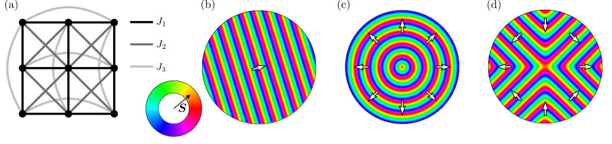
<figcaption class="paper-figure-caption"><b>Fig 1.</b> FIG. 1. (a) Definition of couplings. (b) Homogeneous planar spiral. (c) Planar momentum vortex with u′ = 1. (d) planar momentum vortex with u′ = −1. Hollow arrows indicate the local momentum vectors.</figcaption>
</figure>
<figure class="paper-figure-card">
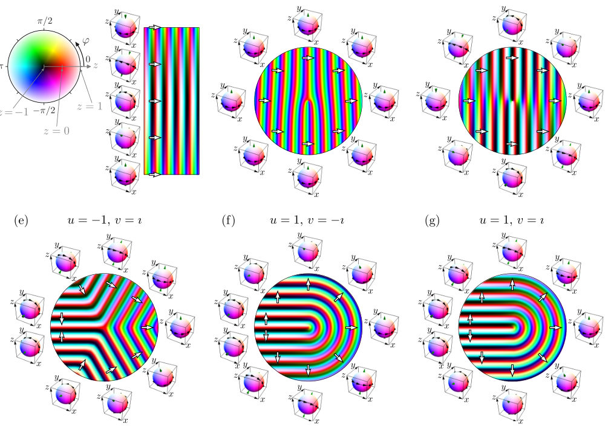
<figcaption class="paper-figure-caption"><b>Fig 2.</b> FIG. 2. (a) Definition of the color scale for the spin directions in the following subfigures: spins have rainbow colors along the equator (x-y-plane, parametrized by the polar angle φ) getting lighter (darker) when moving towards the north pole at z = 1 (south pole at z = −1). (b) Non-coplanar deformation of a spiral state where the spins rotate out of the x-y plane when moving vertically in real space. This non-coplanar angle variation is described by the smaller eigenvalue λ−of Gµν. Here and in the following subfigures, the spheres indicate the variations of the spin directions along the arrows on the black ring, when moving in the direction of the nearby hollow arrows (momentum vectors)...</figcaption>
</figure>
<figure class="paper-figure-card">
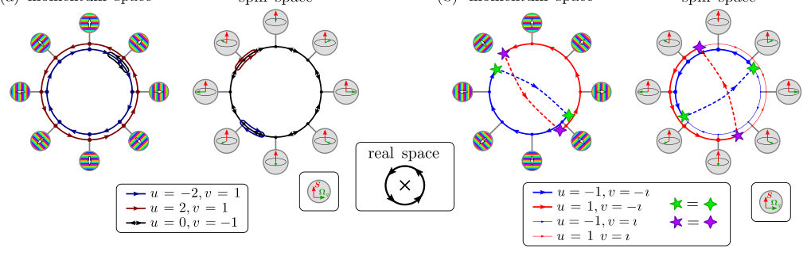
<figcaption class="paper-figure-caption"><b>Fig 3.</b> FIG. 3. Schematic illustration of vortices with (a) even number of π momentum rotations and (b) odd number of π momentum rotations. Both subfigures show the change of the spin configuration in momentum space and spin space when traveling around the vortex core (marked by × in the center inset) along a closed path in counterclockwise direction. Note that the illustrated spin order parameter space (right panel in each subfigure) shows an exemplary 2π rotation of the dyad {S, Ωq} about S. The actual spin order parameter space is SO(3) and the rotation of {S, Ωq} in a vortex can occur about any axis. (a) shows a full momentum antivortex in dark blue with u = −2 and no winding in spin space (v =...</figcaption>
</figure>
<figure class="paper-figure-card">
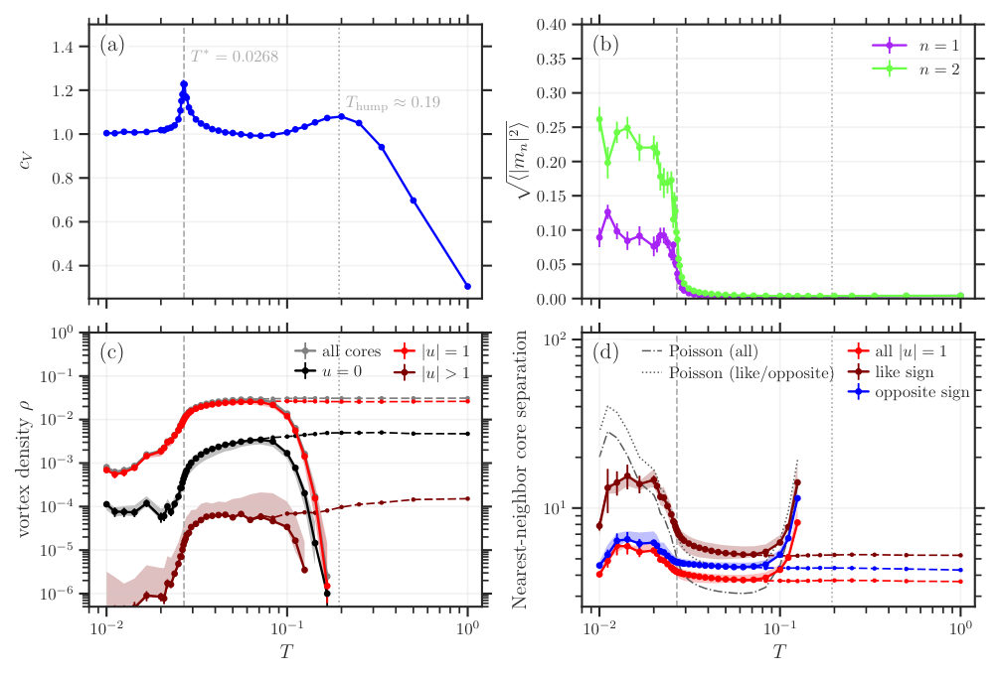
<figcaption class="paper-figure-caption"><b>Fig 4.</b> FIG. 4. (a) Specific heat capacity as function of temperature. (b) Lattice-nematic order parameters for nearest and second- nearest neighbor bonds. (c) Vortex density as a function of temperature. (d) Mean nearest-neighbor vortex core separation for detector radius r = 3. Solid lines show the ⟨q2⟩noise-filtered vorticity count, while dashed lines show the result only noise-filtered with loop radius persistence. Shaded bands span the same (⟨q2⟩noise-filtered) analysis re-run at detector radii r = 2 −4. The simulations freeze into a metastable configuration with a fixed vortex number below T = 0.02.</figcaption>
</figure>
<figure class="paper-figure-card">
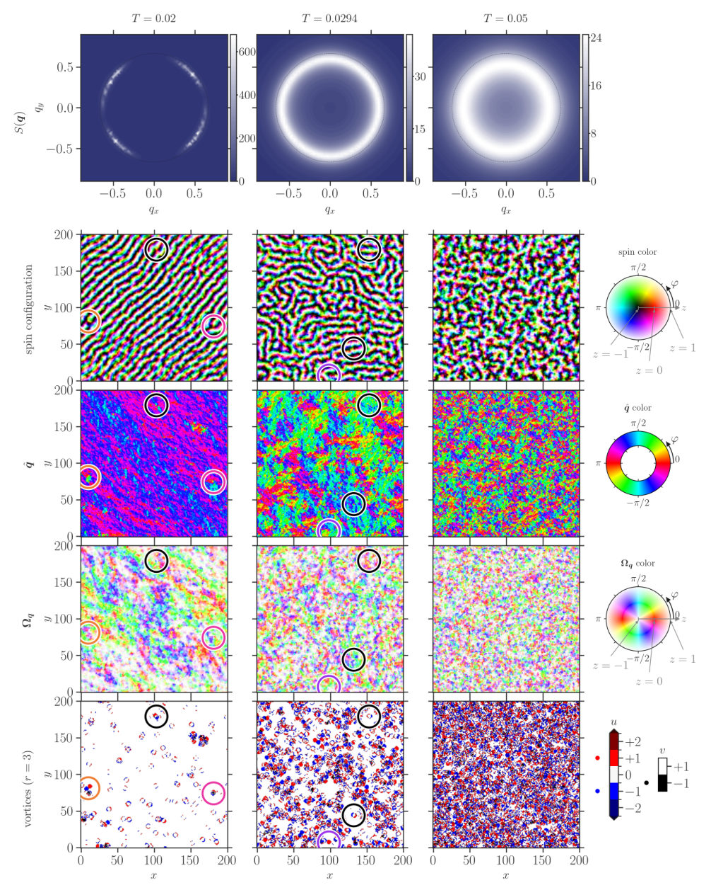
<figcaption class="paper-figure-caption"><b>Fig 5.</b> FIG. 5. Top row: the spin structure factor (average over all runs) for three representative temperatures T = 0.02, T = 0.0294 and T = 0.05. Following rows: one selected spin configuration per temperature with corresponding ˆq, ˆΩˆq and vortex configurations (r = 3). Circles highlight different features from the vortex configurations: (black) three tightly bound |u| = 1 vortex-antivortex pairs that fuse to the vacuum (one at the lowest temperature and two at the middle temperature), (pink) one tightly bound |u| = 1 vortex-antivortex pair that fuses to a Z2 vortex (at the lowest temperature), (purple) one isolated u = +1 vortex (at the middle temperature) and (orange) one loosely bound |u| =...</figcaption>
</figure>
</div>

<p><strong>Summary.</strong> This theoretical work classifies the topological defects in spiral spin liquids by mapping the system's order parameter space to a $\mathbb{Z} \times \mathbb{Z}_2$ structure. The key finding is that the vortices carry fractional charges and obey fusion rules analogous to Ising anyons. This provides a deep mathematical understanding of the emergent quasi-particle physics in these complex magnetic materials.</p>
<p><strong>Why it may be interesting.</strong> The connection between topological defects (vortices) and anyon statistics (Ising anyons) in a magnetically ordered, yet liquid-like, state is highly relevant to understanding emergent quantum phenomena in frustrated magnets.</p>
<details>
<summary>Detailed structure</summary>
<p><strong>Main problem.</strong> The paper aims to classify and characterize the classical topological defects (vortices) present in spin-isotropic Heisenberg spiral spin liquids.</p>
<p><strong>Main result.</strong> The system supports a rich family of vortices classified by a $\mathbb{Z} \times \mathbb{Z}_2$ structure, where elementary defects are half-vortices resembling Ising anyons in their fusion rules.</p>
<p><strong>Method.</strong> The classification relies on analyzing the first homotopy group of the order parameter space, $\pi_1(\text{U}(1) \times \text{SO}(3)/\mathbb{Z}_2)$, and developing multiplicative fusion rules for the topological charges.</p>
<p><strong>Model / system.</strong> The system is a spin-isotropic Heisenberg model on a square lattice, whose classical ground state is a planar incommensurate spin spiral. The low-energy physics is described by an order parameter manifold $M = S^1_{\hat{q}} \times \text{SO}(3) / \langle\gamma\rangle$.</p>
<p><strong>Key observables.</strong> Topological charges $(u, v)$, spin-wave entropy per site ($s$), and the $\mathbb{Z} \times \mathbb{Z}_2$ classification of vortices.</p>
<p><strong>Important parameters / regimes.</strong> The coupling constants $J_1, J_2, J_3$ define the spiral state; the analysis distinguishes between fractional ($u=\pm 1$) and non-fractional vortices.</p>
<p><strong>Assumptions / limitations.</strong> The analysis assumes the existence of a well-defined local low-energy spiral texture and uses continuum limit approximations for the defect analysis.</p>
<p><strong>Figures summary.</strong> Figures illustrate the definition of couplings, planar spiral states, momentum vortices, and the mathematical structure of the topological indices $u$ and $v$ used for classification.</p>
<p><strong>Paper structure.</strong> The paper progresses from defining the physical system and its ground state to generalizing the wave vector definition for Heisenberg spins. It then systematically develops the topological classification using homotopy theory, culminating in the derivation of the multiplicative fusion rules for the vortex charges.</p>
</details>
<details>
<summary>Abstract</summary>
<p>Spiral spin liquids are magnetic states whose classical ground-state manifold consists of planar incommensurate spin spirals with wave vectors lying on a continuous ring or surface in reciprocal space. The resulting subextensive degeneracy suppresses magnetic long-range order and gives rise to liquid-like behavior. Despite numerous material realizations and theoretical investigations, the structure of low-temperature spin configurations of spin-isotropic Heisenberg spiral spin liquids has remained poorly understood. Here, we classify and characterize the classical topological defects supported by these systems. We uncover a rich family of vortex types involving concerted windings of spin directions, spiral-plane normals, and wave-vector orientations, yielding a $\mathbb{Z} \times \mathbb{Z}_2$ classification. Remarkably, the elementary defects are half-vortices carrying fractional $2π$ windings in both spin and momentum space and obey fusion rules resembling to those of Ising anyons. Large-scale classical simulations of a square-lattice spiral spin liquid reveal that these vortices are dense in the spiral-spin-liquid regime, and bind tightly below an order-by-disorder phase transition, eventually fusing to vacuum.</p>
</details>
<p><sub><a href="#top">↑ back to top</a></sub></p>

<p><a id="paper-2609.14191"></a></p>
<h3 id="haldane-holstein-model-at-fractional-filling-route-to-bosonic-fractional-chern-insulator-and-quantum-anomalous-hall-crystal"><a href="http://arxiv.org/abs/2609.14191v1">Haldane-Holstein model at fractional filling: Route to bosonic fractional Chern insulator and quantum anomalous Hall crystal</a></h3>
<p><strong>Authors:</strong> Zezhu Wei, Ang-Kun Wu, Di Xiao, Shi-Zeng Lin<br>
<strong>Type:</strong> theory · <strong>Category:</strong> strongly correlated electrons · <strong>PDF:</strong> <a href="https://arxiv.org/pdf/2609.14191v1">https://arxiv.org/pdf/2609.14191v1</a><br>
<strong>Analysis basis:</strong> full PDF text, analyzed in chunks
<strong>Topic relevance:</strong> <code>analog quantum simulation</code> <strong>3/5</strong> · <code>Keldysh / 2PI / non-Gaussian methods</code> <strong>1/5</strong></p>
<div class="figure-strip-hint">↔ Scroll figures horizontally</div>
<div class="paper-figures-scroll">
<figure class="paper-figure-card">
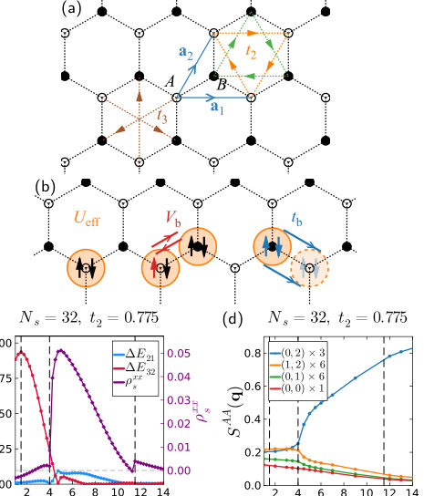
<figcaption class="paper-figure-caption"><b>Fig 1.</b> FIG. 1. (a) Schematic of the extended Haldane model. (b) Schematics of bipolaron formation, and of the interaction Vb and hopping tb of bipolarons; the phonon cloud is represented by the shaded circle. (c,d) Exact-diagonalization (ED) results for the effective hard-core boson Hamiltonian at ν = 1/2 and maximal flatness ratio of the bipolaron band, on Ns = 32 sites, with κ setting the interaction-to-hopping ratio; the dashed lines mark κ = 1.5, 4, and 11.5. (c) Ground-state split- ting ∆E21 = E2 −E1 and many-body gap ∆E32 = E3 −E2 (left axis), and superfluid stiffness ρxx s (right axis) against κ. (d) Intra-sublattice structure factor SAA(q) against κ.</figcaption>
</figure>
<figure class="paper-figure-card">
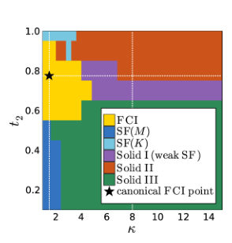
<figcaption class="paper-figure-caption"><b>Fig 2.</b> FIG. 2. Phase diagram of the effective hard-core boson Hamil- tonian at ν = 1/2 on Ns = 24 sites in the (κ, t2) plane. The dotted lines are the three cuts κ = 1.5, κ = 8 and t2 = √</figcaption>
</figure>
<figure class="paper-figure-card">
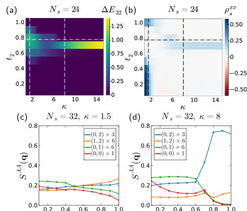
<figcaption class="paper-figure-caption"><b>Fig 3.</b> FIG. 3. ED results for the effective hard-core boson Hamil- tonian at ν = 1/2, treating both t2 and κ as free parameters. (a,b) Many-body gap ∆E32 and superfluid stiffness ρxx s of the ground states on Ns = 24 sites. The dashed lines are three cuts κ = 1.5, κ = 8, and t2 = √</figcaption>
</figure>
<figure class="paper-figure-card">
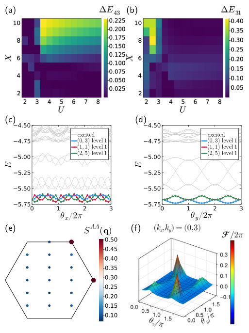
<figcaption class="paper-figure-caption"><b>Fig 4.</b> FIG. 4. ED results for the effective Hamiltonian for spin- polarized electrons on Ns = 36 sites at filling ν = 1/3 (Nf = 6). (a,b) Many-body gap ∆E43 and ground-state split- ting ∆E31 against (U, X). (c–f) Properties of the threefold ground-state manifold at (U, X) = (4.5, 10): (c,d) spectral flow of the ground-state energies against the twisted boundary phases θx and θy; (e) intra-sublattice structure factor SAA(q); (f) Berry curvature F(θx, θy) for the ground state in momen- tum sector (0, 3) on a 12 × 12 grid.</figcaption>
</figure>
<figure class="paper-figure-card">
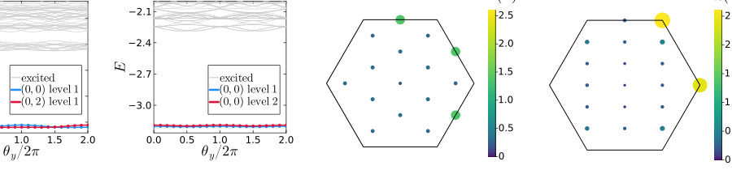
<figcaption class="paper-figure-caption"><b>Fig 5.</b> FIG. 5. ED results for the bipolaron model at κ = 1.5. (a,b) Ground-state spectral flow for the FCI under y-direction flux insertion, with parameters as in Fig. 1, for (a) Ns = 24 and (b) Ns = 32. (c,d) Boson momentum occupation number n(k) of the ground states, for (c) t2 = 0.2 on Ns = 32 and (d) t2 = 1 on Ns = 36.</figcaption>
</figure>
</div>

<p><strong>Summary.</strong> This work demonstrates that strong electron-phonon coupling can be a mechanism for stabilizing topological order rather than destroying it in partially filled Chern bands. By analyzing the Haldane-Holstein model, the authors predict the emergence of a bosonic Fractional Chern Insulator and a Quantum Anomalous Hall Crystal. The findings establish electron-phonon coupling as a route to topological matter in correlated electron systems.</p>
<p><strong>Why it may be interesting.</strong> The mechanism by which lattice coupling (phonons) can induce and stabilize exotic topological states (FCI, QAHC) by mediating strong correlations is highly relevant to understanding emergent topological phases in strongly correlated materials.</p>
<details>
<summary>Detailed structure</summary>
<p><strong>Main problem.</strong> The paper investigates how strong electron-phonon coupling can stabilize topological phases in partially filled Chern bands, contrary to the expectation that such coupling generally suppresses band topology.</p>
<p><strong>Main result.</strong> Strong coupling stabilizes a bosonic Fractional Chern Insulator (FCI) at $\nu=1/2$ and a $C=2$ Quantum Anomalous Hall Crystal (QAHC) at $\nu=1/3$ for spin-polarized electrons.</p>
<p><strong>Method.</strong> The analysis employs the strong-coupling limit of the Haldane-Holstein model, utilizing Lang-Firsov transformations and subsequent effective boson Hamiltonians derived via degenerate perturbation theory.</p>
<p><strong>Model / system.</strong> The system is the Haldane-Holstein model at partial filling, which is analyzed by mapping the physics onto an effective hard-core boson model for bipolarons (charge-$2e$).</p>
<p><strong>Key observables.</strong> Many-body Chern number ($C_{tot}$), superfluid stiffness ($\rho_{xx}^s$), and the existence of quantized Hall conductance ($\sigma_{xy} = 2e^2/h$).</p>
<p><strong>Important parameters / regimes.</strong> The dimensionless electron-phonon coupling parameter $X = U_{ph}/\omega$, and the effective interaction-to-hopping ratio $\kappa$.</p>
<p><strong>Assumptions / limitations.</strong> The analysis is performed in the strong-coupling limit, and the effective Hamiltonians are derived using perturbation theory.</p>
<p><strong>Figures summary.</strong> Figures illustrate the phase diagram of the effective boson Hamiltonian showing FCI, solid phases, and superconductors; other figures detail the band folding and Chern number calculation for the QAHC state.</p>
<p><strong>Paper structure.</strong> The paper first establishes the model and the role of electron-phonon coupling. It then derives the effective boson Hamiltonian in the strong-coupling limit. The results map out a rich phase diagram showing the FCI and QAHC states, followed by detailed analysis of the charge fractionalization and band folding mechanisms.</p>
</details>
<details>
<summary>Abstract</summary>
<p>Electron-phonon coupling is generally expected to suppress band topology, driving a topological band insulator into a trivial phase. Here we show that, using the prototypical Haldane-Holstein model at partial filling of a topological band, strong electron-phonon coupling can instead stabilize topological phases of matter. The electron-phonon coupling plays a double role: it generates the longer-range interactions that correlate the carriers and, in the attractive channel, also binds them into bosonic pairs. For spinful electrons, it pairs opposite spins into charge-$2e$ bipolarons that form a bosonic fractional Chern insulator (FCI) at filling $ν=1/2$ with charge-$e$ semionic excitations. Tuning the band topology and the coupling strength maps out a rich phase diagram containing this bosonic FCI, superconductors condensed at the $M$ and $K$ points, and several charge-ordered solids. For spin-polarized electrons, strong coupling instead stabilizes a $C=2$ quantum anomalous Hall crystal (QAHC) at $ν=1/3$. Electron-phonon coupling thus emerges as a route to, rather than an obstruction against, topology in partially filled Chern bands.</p>
</details>
<p><sub><a href="#top">↑ back to top</a></sub></p>

<p><a id="paper-2609.15061"></a></p>
<h3 id="non-abelian-chiral-spin-liquid-in-a-spin-math657math-antiferromagnet-on-the-square-lattice"><a href="http://arxiv.org/abs/2609.15061v1">Non-Abelian chiral spin liquid in a spin-$1$ antiferromagnet on the square lattice</a></h3>
<p><strong>Authors:</strong> Xiao-Tian Zhang, Yuan Yang, D. N. Sheng, Shou-Shu Gong<br>
<strong>Type:</strong> theory · <strong>Category:</strong> strongly correlated electrons · <strong>PDF:</strong> <a href="https://arxiv.org/pdf/2609.15061v1">https://arxiv.org/pdf/2609.15061v1</a><br>
<strong>Analysis basis:</strong> full PDF text, analyzed in chunks
<strong>Topic relevance:</strong> <code>analog quantum simulation</code> <strong>3/5</strong> · <code>methods for driven-dissipative</code> <strong>1/5</strong></p>
<div class="figure-strip-hint">↔ Scroll figures horizontally</div>
<div class="paper-figures-scroll">
<figure class="paper-figure-card">
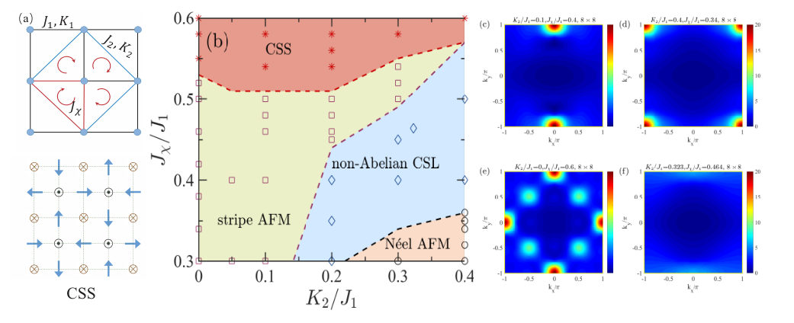
<figcaption class="paper-figure-caption"><b>Fig 1.</b> FIG. 1. Model and phase diagram. (a) Schematic figures of the spin-1 J1-J2-K1-K2-Jχ model on the square lattice and the spin configuration of the classical chiral spin state (CSS). The couplings J1 and J2 (K1 and K2) denote the nearest-neighbor and next-nearest-neighbor bilinear (biquadratic) interactions, respectively. The scalar chiral coupling JχSi ·(Sj ×Sk) is applied to the four types of triangles in each plaquette. For each triangle, the sites i, j and k follow the same clockwise direction. In the cartoon picture of the classical CSS, the arrows mark the directions of local spins. (b) Quantum phase diagram in the K2 −Jχ plane for J1 = 1.0, J2 = 0.623, and K1 = −0.176. The phase...</figcaption>
</figure>
<figure class="paper-figure-card">
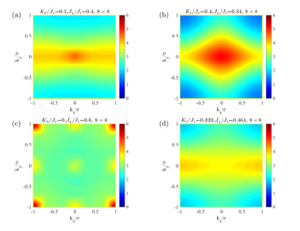
<figcaption class="paper-figure-caption"><b>Fig 2.</b> FIG. 2. Quadrupolar structure factor SQ(k) at four repre- sentative parameter points for fixed J1 = 1.0, J2/J1 = 0.623, and K1/J1 = −0.176. The Fourier transform is evaluated over an 8 × 8 window on the Ly = 8 infinite cylinder. The iDMRG calculations are performed with the bond di- mension χ = 5000. (a)-(d) correspond to the stripe AFM point (K2/J1 = 0.1, Jχ/J1 = 0.4), the Néel AFM point (K2/J1 = 0.4, Jχ/J1 = 0.34), the CSS point (K2/J1 = 0, Jχ/J1 = 0.6), and the representative non-Abelian CSL point (K2/J1 = 0.323, Jχ/J1 = 0.464), respectively. The color bar denotes the magnitude of SQ(k).</figcaption>
</figure>
<figure class="paper-figure-card">
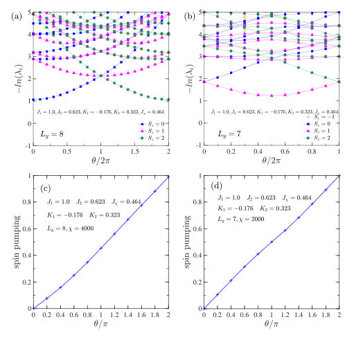
<figcaption class="paper-figure-caption"><b>Fig 3.</b> FIG. 3. Adiabatic flux insertion and spin pumping at the representative non-Abelian CSL point (J1 = 1.0, J2 = 0.623, K1 = −0.176, K2 = 0.323, Jχ = 0.464). (a) Entangle- ment spectrum flow under adiabatic insertion of flux θ on the Ly = 8 cylinder. The eigenvalues in the Sz = 0, 1, 2 sectors are labeled by different symbols. (b) Entanglement spectrum flow under adiabatic insertion of flux θ on the Ly = 7 cylin- der, obtained by iDMRG with bond dimension χ = 2000. In this case, the Ising anyon sector evolves back to itself after θ = 0 →2π. (c) Spin pumping on the Ly = 8 cylinder, ob- tained by iDMRG with bond dimension χ = 4000. During one flux insertion cycle θ = 0 →2π, one unit of spin is...</figcaption>
</figure>
<figure class="paper-figure-card">
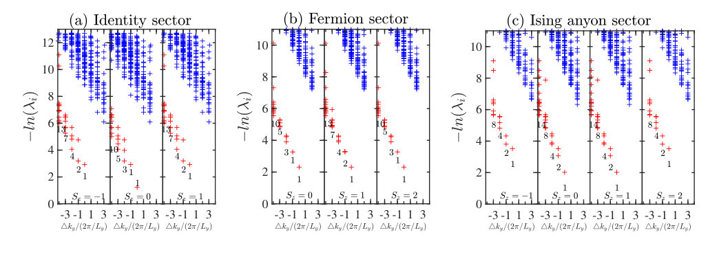
<figcaption class="paper-figure-caption"><b>Fig 4.</b> FIG. 4. Entanglement spectra in the three topological sectors at the representative non-Abelian CSL point (J1 = 1.0, J2 = 0.623, K1 = −0.176, K2 = 0.323, Jχ = 0.464). The spectra are labeled by the total spin Sz and relative momentum ∆ky along the y direction. λi denotes the eigenvalue of the reduced density matrix. The identity sector (a) and the fermion sector (b) are obtained on the Ly = 8 cylinder, while the Ising anyon sector (c) is obtained on the Ly = 7 cylinder. All spectra are obtained from iDMRG calculations with the bond dimensions χ = 4000. The numbers indicate the degeneracy counting of the low-lying levels at each relative momentum, consistent with the chiral SU(2)2 CFT.</figcaption>
</figure>
<figure class="paper-figure-card">
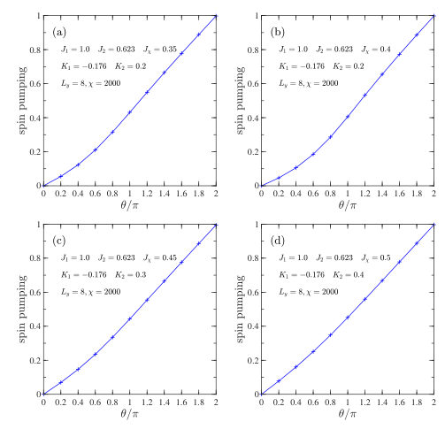
<figcaption class="paper-figure-caption"><b>Fig 5.</b> FIG. 5. Quantized spin pumping at representative points in the non-Abelian CSL region. Results are obtained from iDMRG calculations on the Ly = 8 cylinder with bond di- mension χ = 2000 for fixed J1 = 1.0, J2/J1 = 0.623, and K1/J1 = −0.176. (a)-(d) show representative points se- lected from the non-Abelian CSL region in Fig. 1(b): (a) K2 = 0.2, Jχ = 0.35, (b) K2 = 0.2, Jχ = 0.4, (c) K2 = 0.3, Jχ = 0.45, (d) K2 = 0.4, Jχ = 0.5. During one flux- insertion cycle from θ = 0 to 2π, one unit of magnetization is pumped to one open boundary of the cylinder, giving a quan- tized spin Chern number C = 1 for all four parameter points.</figcaption>
</figure>
</div>

<p><strong>Summary.</strong> This work investigates the realization of non-Abelian chiral spin liquids in a spin-1 antiferromagnet model on the square lattice. Using advanced DMRG calculations, the authors map a quantum phase diagram and confirm the existence of the CSL phase. The topological nature of this phase is robustly verified through the measurement of a quantized spin Chern number (C=1) and detailed analysis of the entanglement spectrum.</p>
<p><strong>Why it may be interesting.</strong> The explicit connection between tunable lattice interactions (biquadratic and chiral terms) and the emergence of a specific, highly sought-after topological state (non-Abelian CSL) provides a concrete, actionable model for realizing topological quantum computation principles.</p>
<details>
<summary>Detailed structure</summary>
<p><strong>Main problem.</strong> The primary goal is to realize and characterize Non-Abelian chiral spin liquids (CSLs) in short-range interacting spin systems, which are crucial platforms for topological quantum computation.</p>
<p><strong>Main result.</strong> The study identifies a non-Abelian CSL phase in the spin-1 square lattice model, confirmed by a quantized spin Chern number of C=1 and entanglement spectra consistent with chiral SU(2)2 CFT.</p>
<p><strong>Method.</strong> The research heavily relies on Density Matrix Renormalization Group (DMRG) calculations, including infinite DMRG (iDMRG) techniques, to map the quantum phase diagram and probe topological invariants.</p>
<p><strong>Model / system.</strong> The system is a spin-1 antiferromagnet on the square lattice, described by a complex Hamiltonian including nearest-neighbor and next-nearest-neighbor bilinear and biquadratic couplings, plus a three-spin chiral coupling ($J_\chi$).</p>
<p><strong>Key observables.</strong> Quantized spin Chern number (C), entanglement spectrum eigenvalues, spin structure factor $S(\mathbf{k})$, and quadrupolar structure factor $S_Q(\mathbf{k})$.</p>
<p><strong>Important parameters / regimes.</strong> Fixed parameters include $J_1=1.0$, $J_2/J_1=0.623$, and $K_1/J_1=-0.176$; the phase diagram is mapped by varying $K_2/J_1$ and $J_\chi/J_1$.</p>
<p><strong>Assumptions / limitations.</strong> The analysis is performed on finite cylinders ($L_y=8$ or $L_y=7$), and the interpretation of phase boundaries relies on supplementing structural diagnostics with topological measurements like spin pumping.</p>
<p><strong>Figures summary.</strong> Figures illustrate the model schematic and the quantum phase diagram. Key diagnostics include $S(\mathbf{k})$ showing magnetic order in different phases, and entanglement spectrum flow/spin pumping measurements confirming the CSL phase via $C=1$.</p>
<p><strong>Paper structure.</strong> The paper first defines the complex spin-1 Hamiltonian and the physical goal. It then uses DMRG to map the phase diagram, identifying four distinct phases. The topological nature of the CSL is rigorously confirmed using multiple diagnostics, including the spin Chern number and entanglement spectrum analysis, to distinguish it from magnetically ordered states.</p>
</details>
<details>
<summary>Abstract</summary>
<p>Non-Abelian chiral spin liquids (CSLs) host non-Abelian anyon excitations and are promising platforms for topological quantum computation. However, realizing non-Abelian CSLs in short-range interacting spin systems remains elusive. Here, we study a spin-$1$ square-lattice model with the first- and second-neighbor bilinear ($J_1,J_2$) and biquadratic interactions ($K_1,K_2$), as well as the three-spin scalar chiral coupling $J_χ$. Inspired by the evidence of the Moore-Read state in exact diagonalization and infinite Projected Entangled Pair States calculations, we fix $J_1=1.0$, $J_2/J_1=0.623$, $K_1/J_1=-0.176$, and obtain a quantum phase diagram for $0 \leq K_2/J_1 \leq 0.4$ and $0.3 \leq J_χ/J_1 \leq 0.6$ by using the density matrix renormalization group (DMRG) calculations. We identify a stripe antiferromagnetic phase, a Néel antiferromagnetic phase, a magnetically ordered chiral spin state phase, and a non-Abelian CSL phase emerging near the boundaries of the ordered phases. The unbiased DMRG results provide strong evidence for the Moore-Read state, including the three topological sectors, the quantized spin Chern number $C=1$, and the level counting of low-lying entanglement spectra which is consistent with the chiral SU(2)$_2$ conformal field theory. Our results may shed new light on searching for non-Abelian CSLs in other higher-spin ($S > 1/2$) systems with short-range couplings.</p>
</details>
<p><sub><a href="#top">↑ back to top</a></sub></p>

<p><a id="paper-2609.15739"></a></p>
<h3 id="pauli-spectrum-and-nonstabilizerness-of-random-fermionic-gaussian-states"><a href="http://arxiv.org/abs/2609.15739v1">Pauli spectrum and nonstabilizerness of random fermionic Gaussian states</a></h3>
<p><strong>Authors:</strong> Xhek Turkeshi, Piotr Sierant, Poetri Sonya Tarabunga<br>
<strong>Type:</strong> theory · <strong>Category:</strong> statistical mechanics · <strong>PDF:</strong> <a href="https://arxiv.org/pdf/2609.15739v1">https://arxiv.org/pdf/2609.15739v1</a><br>
<strong>Analysis basis:</strong> full PDF text, analyzed in chunks
<strong>Topic relevance:</strong> <code>analog quantum simulation</code> <strong>3/5</strong> · <code>Keldysh / 2PI / non-Gaussian methods</code> <strong>1/5</strong></p>
<div class="figure-strip-hint">↔ Scroll figures horizontally</div>
<div class="paper-figures-scroll">
<figure class="paper-figure-card">
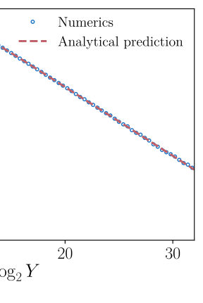
<figcaption class="paper-figure-caption"><b>Fig 1.</b> Figure 1. Squared Pauli spectrum of the Majorana ensemble at N = 8, conditioned on nontrivial even strings and plotted as z = −log2 Y . Symbols: every such Pauli expectation evaluated from the covariance matrix in each of 1024 independently drawn states, using Wick’s theorem. Dashed curve: the analytical density eq. (4.15), with the sector density from eq. (B.2).</figcaption>
</figure>
<figure class="paper-figure-card">
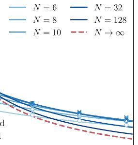
<figcaption class="paper-figure-caption"><b>Fig 2.</b> Figure 2. Filtered magic density in the Majorana ensemble. Solid curves: exact annealed result eq. (4.5) at N = 4, 6, 8, 10, 12, 32, 128. Circles and crosses: annealed and quenched averages at N = 4, 6, 8, 10, 12, respectively, calculated from all nontrivial even strings at integer q. Error bars are standard errors across states, propagated through the logarithm for the annealed values. The larger sizes show the approach to the dashed thermodynamic limit eq. (5.10).</figcaption>
</figure>
<figure class="paper-figure-card">
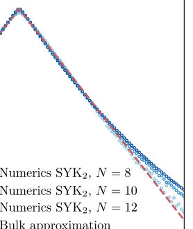
<figcaption class="paper-figure-caption"><b>Fig 3.</b> Figure 3. Signed Pauli spectrum of half-filled GUE SYK2 ground states, conditioned on nontrivial even strings. Symbols: all such Pauli expectations at N = 8, 10, 12, evaluated from the occupied- orbital covariance matrices using Wick’s theorem. Dashed curve: the analytical bulk approximation eq. (7.13), obtained by averaging Gaussian amplitudes over an effective exponential variance, with bN fixed by Parseval’s identity. Both axes are rescaled by bN.</figcaption>
</figure>
</div>

<p><strong>Summary.</strong> This work rigorously characterizes the nonstabilizerness, or 'magic,' of random fermionic Gaussian states using Pauli spectra and stabilizer entropies. Key findings include deriving exact formulas for these quantities and demonstrating that these states maintain a high degree of magic even when a significant fraction of their degrees of freedom are removed. This provides theoretical insight into the robustness of quantum resources in complex fermionic systems.</p>
<p><strong>Why it may be interesting.</strong> The concept of 'magic' resources and their resilience to local perturbations (mode discarding) is highly relevant to understanding the robustness of quantum information processing in complex, interacting many-body systems.</p>
<details>
<summary>Detailed structure</summary>
<p><strong>Main problem.</strong> The paper characterizes the 'magic' or nonstabilizerness of random fermionic Gaussian states by analyzing their Pauli spectrum and stabilizer entropies.</p>
<p><strong>Main result.</strong> It establishes that typical fermionic Gaussian states retain certified magic even after discarding a fixed fraction of their modes in the thermodynamic limit, and derives closed forms for average stabilizer purities.</p>
<p><strong>Method.</strong> The analysis uses the Jordan-Wigner transformation to map Pauli strings to Majorana monomials, employing Wick's theorem to calculate expectation values as Pfaffians.</p>
<p><strong>Model / system.</strong> The study focuses on random fermionic Gaussian states, including the Haar ensemble of Majorana Gaussian states and complex Slater determinants at fixed filling, which are related to eigenstates of $\mathrm{SYK}_2$ Hamiltonians.</p>
<p><strong>Key observables.</strong> Pauli spectrum, Stabilizer Rényi entropies ($M_q$), Stabilizer purities ($\zeta_q$), and the 'magic density' ($D_q$).</p>
<p><strong>Important parameters / regimes.</strong> The Rényi index $q$, the fraction of discarded modes $\kappa$, and the filling fraction $
u$.</p>
<p><strong>Assumptions / limitations.</strong> The analysis relies on the Jordan-Wigner transformation and Wick's theorem for Gaussian states, noting that direct sampling estimates fail for $q>2$ due to rare weight-two Majorana strings.</p>
<p><strong>Figures summary.</strong> Not specified.</p>
<p><strong>Paper structure.</strong> The paper proceeds by first introducing the concept of magic and relevant ensembles, deriving exact results for the Majorana ensemble, analyzing number-conserving ensembles, and concluding with general statements on mode discarding.</p>
</details>
<details>
<summary>Abstract</summary>
<p>We characterize the magic of random fermionic Gaussian states through their Pauli spectrum and their stabilizer entropies. For the Haar ensemble of Majorana Gaussian states we derive closed finite-$N$ expressions for the average stabilizer purities and reconstruct the Pauli spectrum exactly, as a mixture of products of beta-distributed variables resolved by Majorana weight. The stabilizer entropies, and their filtered versions, freeze at Rényi index $q_c=2$: for $q>2$ the magic density is $1/(q-1)$, controlled by rare weight-two Majorana strings. Resolving these contributions requires exponentially many characteristic samples, making direct sampling estimates of the stabilizer entropies inefficient in this frozen regime. For Haar-random Gaussian states at fixed filling, we express the averaged stabilizer purities at positive integer $q$ as coefficient integrals over $\mathrm{SU}(2q)$, with dimension independent of $N$, and evaluate the $q=2$ case exactly. We establish that the frozen density describes typical states in the Majorana and half-filled number-conserving ensembles and relate these ensembles to the corresponding $\mathrm{SYK}_2$ ground states. Finally, we show that typical fermionic Gaussian states retain certified magic after discarding any fixed fraction $κ<κ_\star^{\rm G}\simeq0.7613$ of their modes in the thermodynamic limit, remaining magical even beyond the $2/3$ threshold for Haar-random states in the full Hilbert space.</p>
</details>
<p><sub><a href="#top">↑ back to top</a></sub></p>

<p><a id="paper-2609.14155"></a></p>
<h3 id="phonon-scharnhorst-effect-acoustic-analogue-of-the-vacuum-fluctuation-boosted-speed-of-light"><a href="http://arxiv.org/abs/2609.14155v1">Phonon Scharnhorst effect: Acoustic analogue of the vacuum-fluctuation-boosted speed of light</a></h3>
<p><strong>Authors:</strong> C. W. J. Beenakker<br>
<strong>Type:</strong> theory · <strong>Category:</strong> quantum gases · <strong>PDF:</strong> <a href="https://arxiv.org/pdf/2609.14155v1">https://arxiv.org/pdf/2609.14155v1</a><br>
<strong>Analysis basis:</strong> full PDF text, analyzed in chunks
<strong>Topic relevance:</strong> <code>analog quantum simulation</code> <strong>3/5</strong> · <code>Keldysh / 2PI / non-Gaussian methods</code> <strong>1/5</strong></p>
<div class="figure-strip-hint">↔ Scroll figures horizontally</div>
<div class="paper-figures-scroll">
<figure class="paper-figure-card">
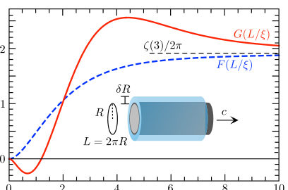
<figcaption class="paper-figure-caption"><b>Fig 1.</b> FIG. 1. Scaling functions that determine the dependence on the ratio of cylinder perimeter L and healing length ξ of the vacuum-fluctuation contribution to the condensate energy [function F, Eq. (8)] and sound velocity [function G, Eq. (11)]. Both functions tend to ζ(3)/2π in the large-L limit. The inset shows the cylinder geometry.</figcaption>
</figure>
<figure class="paper-figure-card">
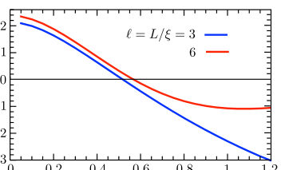
<figcaption class="paper-figure-caption"><b>Fig 2.</b> FIG. 2. Temperature dependence of the scaling function (39) that governs the L-dependent shift of the isothermal com- pressibility velocity δcT = 1</figcaption>
</figure>
</div>

<p><strong>Summary.</strong> This theoretical paper adapts the concept of the Scharnhorst effect, which predicts superluminal speed shifts from vacuum fluctuations, to the context of Bose-Einstein condensates. By modeling phonons in a BEC confined to a cylinder, the authors calculate a predicted speed-of-sound shift that is vastly larger than the QED prediction. The methodology relies on advanced many-body techniques applied to quasi-2D quantum gases.</p>
<p><strong>Why it may be interesting.</strong> This work directly connects fundamental concepts from quantum electrodynamics (vacuum fluctuations) to controllable, highly tunable systems like BECs, providing a concrete, large-scale analogue for experimental investigation in AMO physics.</p>
<details>
<summary>Detailed structure</summary>
<p><strong>Main problem.</strong> The paper proposes a condensed matter analogue to the Scharnhorst effect, predicting a superluminal velocity shift in the speed of sound of a Bose-Einstein condensate (BEC) due to zero-point vacuum fluctuations.</p>
<p><strong>Main result.</strong> The predicted relative velocity shift ($\delta c/c_0$) is significantly larger (by 28 orders of magnitude) than the analogous effect in QED, making it a potentially observable phenomenon in BECs.</p>
<p><strong>Method.</strong> The authors use Bogoliubov theory and the Abel-Plana formula to calculate the vacuum energy density contribution from zero-point fluctuations in a quasi-2D geometry.</p>
<p><strong>Model / system.</strong> The system is a dilute Bose gas confined to the surface of a cylinder, modeled using the Gross-Pitaevskii theory. The analysis involves geometric renormalization to derive an effective 2D coupling constant.</p>
<p><strong>Key observables.</strong> The relative velocity shift ($\delta c/c_0$) of the phonon spectrum, which appears as a common displacement across the frequency ladder ($\omega_j = \pi j c/L_{ax}$).</p>
<p><strong>Important parameters / regimes.</strong> Healing length ($\xi$), cylinder circumference ($L$), dimensionless interaction constant ($   ilde{g}$), and the ratio $L/\xi$.</p>
<p><strong>Assumptions / limitations.</strong> The primary calculation assumes an idealized, strictly 2D Bose gas geometry, and the results are derived for zero temperature, though finite temperature corrections are discussed.</p>
<p><strong>Figures summary.</strong> Figures illustrate the scaling functions $F(\ell)$ and $G(\ell)$ that determine the energy and sound velocity dependence on the ratio $\ell = L/\xi$.</p>
<p><strong>Paper structure.</strong> The paper progresses by first establishing the QED analogue, then modeling the BEC system on a cylinder, deriving the effective 2D Hamiltonian via renormalization, and finally calculating the velocity shift using fluctuation theory and addressing geometric and thermal corrections.</p>
</details>
<details>
<summary>Abstract</summary>
<p>The Scharnhorst effect in quantum electrodynamics predicts a superluminal velocity shift $δc>0$ at low photon frequencies due to vacuum fluctuations between two mirrors. Although theoretically robust (no causality violation), the effect is extraordinarily small ($δc/c\approx 10^{-32}$ for mirrors $1\,μ{\rm m}$ apart) and outside current experimental reach. Here we propose a condensed matter analogue, replacing the photons in the electromagnetic vacuum by phonon excitations of a Bose-Einstein condensate. In an idealized geometry, the two-dimensional surface of a cylinder (circumference $L$) at zero temperature, the axial speed of sound is increased due to zero-point fluctuations of the condensate by $δc/c\simeq 5\times 10^{-3}\,\tilde{g}$ at $L\simeq 2\,ξ$, to first order in the dimensionless interaction constant $\tilde{g}\simeq 10^{-1}$ of the Bose gas of healing length $ξ\simeq 1\,μ{\rm m}$. This is 28 orders of magnitude larger than the photonic effect, basically because phonons have a self-interaction while photons only interact via massive electrons. We discuss the prospects for observation of the acoustic Scharnhorst effect, the main restriction being the low-temperature requirement.</p>
</details>
<p><sub><a href="#top">↑ back to top</a></sub></p>

<p><a id="paper-2609.15237"></a></p>
<h3 id="quantum-geometry-of-gravitons"><a href="http://arxiv.org/abs/2609.15237v1">Quantum geometry of gravitons</a></h3>
<p><strong>Authors:</strong> M. Mehraeen<br>
<strong>Type:</strong> theory · <strong>Category:</strong> other · <strong>PDF:</strong> <a href="https://arxiv.org/pdf/2609.15237v1">https://arxiv.org/pdf/2609.15237v1</a><br>
<strong>Analysis basis:</strong> full PDF text, analyzed in chunks
<strong>Topic relevance:</strong> <code>Keldysh / 2PI / non-Gaussian methods</code> <strong>3/5</strong> · <code>quantum measurements</code> <strong>1/5</strong></p>
<div class="figure-strip-hint">↔ Scroll figures horizontally</div>
<div class="paper-figures-scroll">
<figure class="paper-figure-card">
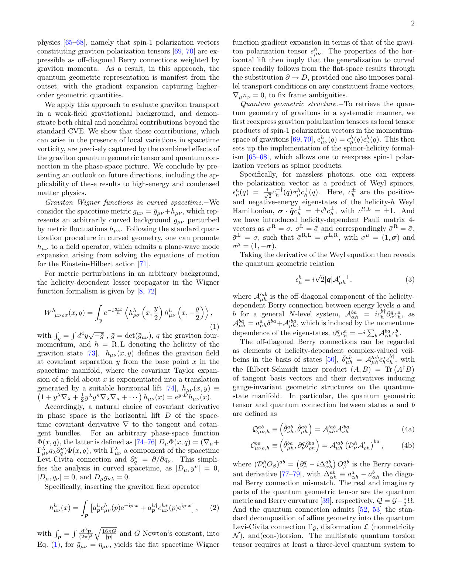
<figcaption class="paper-figure-caption"><b>Fig 1.</b> Low-resolution page preview, page 2</figcaption>
</figure>
<figure class="paper-figure-card">
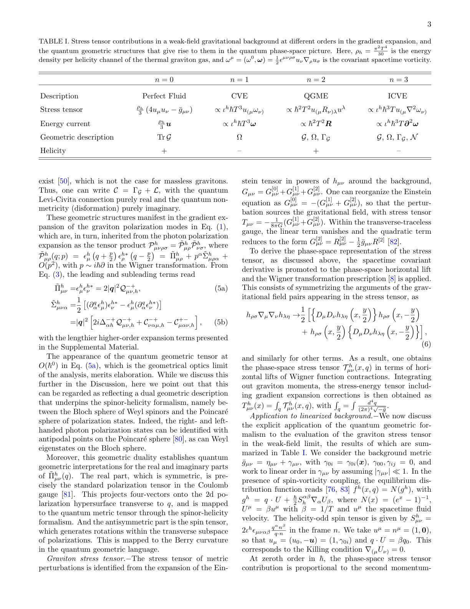
<figcaption class="paper-figure-caption"><b>Fig 2.</b> Low-resolution page preview, page 3</figcaption>
</figure>
<figure class="paper-figure-card">
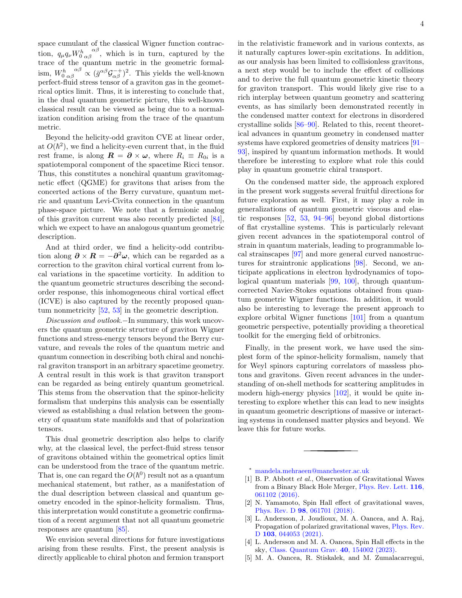
<figcaption class="paper-figure-caption"><b>Fig 3.</b> Low-resolution page preview, page 4</figcaption>
</figure>
<figure class="paper-figure-card">
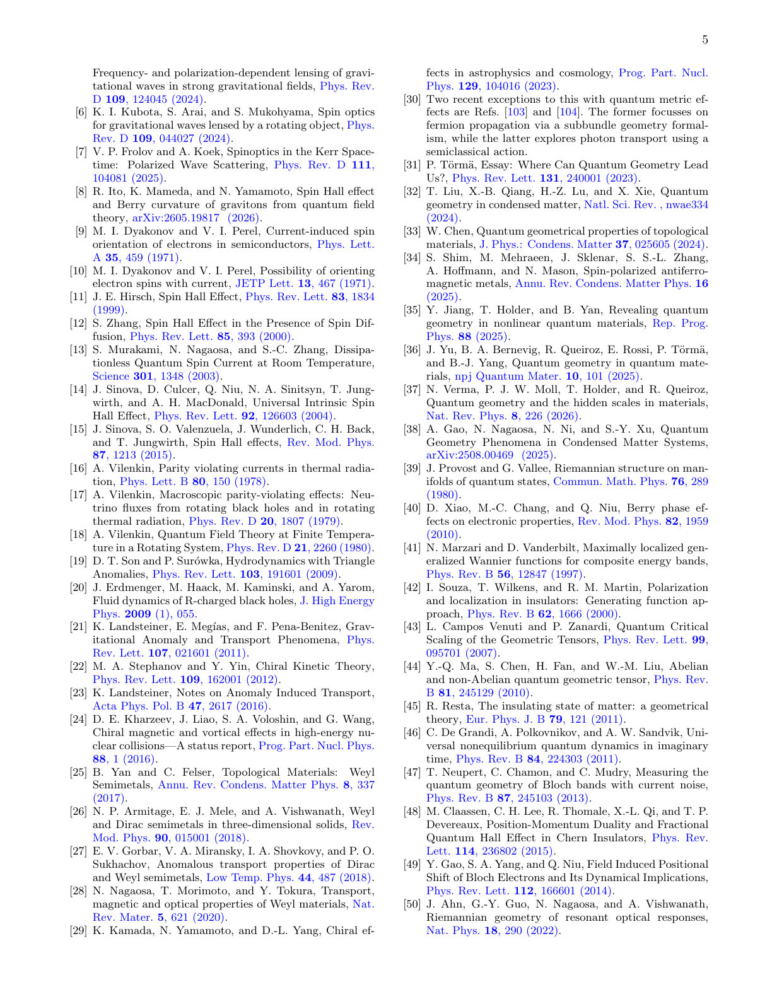
<figcaption class="paper-figure-caption"><b>Fig 4.</b> Low-resolution page preview, page 5</figcaption>
</figure>
<figure class="paper-figure-card">
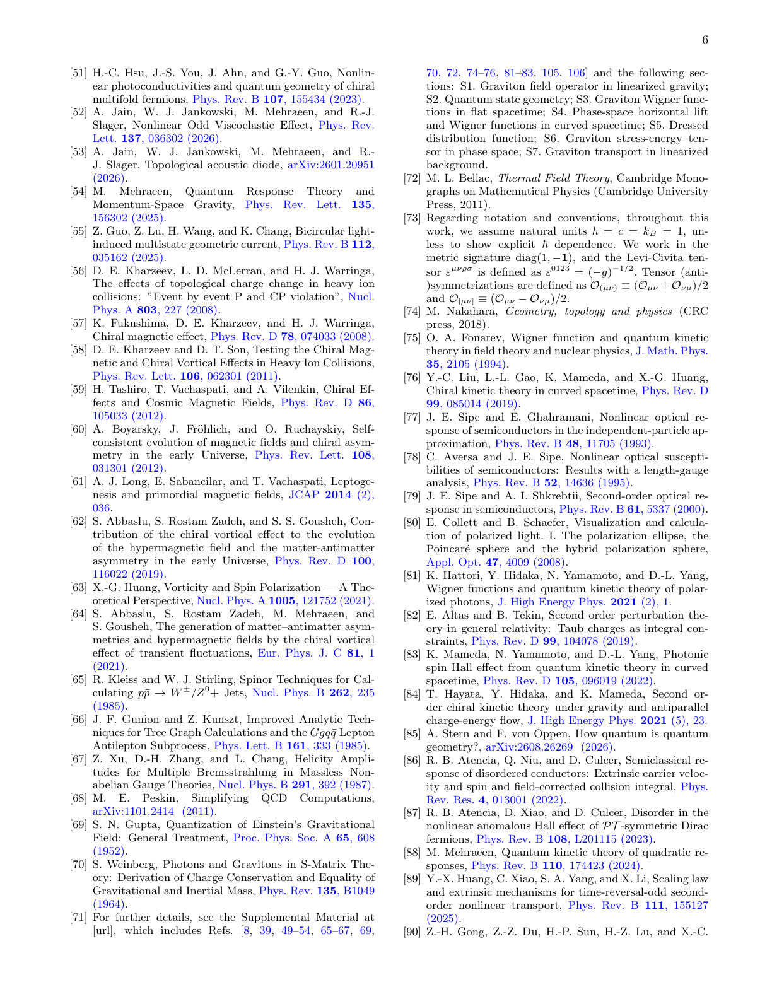
<figcaption class="paper-figure-caption"><b>Fig 5.</b> Low-resolution page preview, page 6</figcaption>
</figure>
</div>

<p><strong>Summary.</strong> This work develops a quantum geometric framework to describe graviton transport in curved spacetime by analyzing the phase-space stress-energy tensor. Using the Wigner function formalism and systematic $\hbar$ expansion, the authors demonstrate that higher-order transport effects are entirely encoded in quantum geometric quantities like the quantum metric and connection. This provides a unified geometric approach applicable to various quantum systems.</p>
<p><strong>Why it may be interesting.</strong> The framework establishes a deep connection between gravitational dynamics (gravitons) and geometric structures (quantum metric, connection), providing a template for understanding how quantum geometry governs transport in complex many-body systems.</p>
<details>
<summary>Detailed structure</summary>
<p><strong>Main problem.</strong> The paper aims to uncover the quantum geometric structure of graviton Wigner functions and stress-energy tensors in curved spacetime, extending the description beyond linear approximations.</p>
<p><strong>Main result.</strong> The graviton transport phenomena, including effects beyond the chiral vortical effect, are shown to be entirely derivable from quantum geometric quantities like the quantum metric and connection.</p>
<p><strong>Method.</strong> The authors employ quantum field theory in curved spacetime, utilizing the Wigner function formalism and a systematic $\hbar$ expansion to calculate the phase-space stress tensor.</p>
<p><strong>Model / system.</strong> The system under study is graviton perturbations ($h_{\mu
u}$) propagating in a curved spacetime background ($ar{g}_{\mu
u}$). The analysis is performed in the phase space using the spinor-helicity formalism.</p>
<p><strong>Key observables.</strong> Graviton Wigner functions, stress-energy tensors ($T_{\mu
u}$), quantum metric ($G$), Berry curvature ($\Omega$), and quantum nonmetricity ($N$).</p>
<p><strong>Important parameters / regimes.</strong> The expansion parameter is $\hbar$, and the analysis considers weak gravitational backgrounds ($ar{g}<em>{\mu
u} = \eta</em>{\mu
u} + \gamma_{\mu
u}$).</p>
<p><strong>Assumptions / limitations.</strong> The analysis relies on the validity of the Wigner function formalism and the systematic $\hbar$ expansion, assuming the quantum geometric nature encoded in the spinor-helicity formalism is key.</p>
<p><strong>Figures summary.</strong> TABLE I summarizes stress tensor contributions ($
ho_h$, energy current) at different orders in $\hbar$ and links them to underlying quantum geometric structures like $  ext{Tr} G$, $\Omega$, $\Gamma_G$, and $N$.</p>
<p><strong>Paper structure.</strong> The paper systematically develops the phase-space representation of the stress tensor using the horizontal lift and Wigner function formalism, calculating corrections order-by-order in $\hbar$ to reveal the emergence of quantum geometric terms.</p>
</details>
<details>
<summary>Abstract</summary>
<p>We uncover the quantum geometric structure of graviton Wigner functions and stress-energy tensors via quantum field theory in curved spacetime, revealing the phase-space geometry of spacetime and relativistic quantum-state manifolds. We show that the polarization mode expansion of the underlying graviton field operator is fully captured by quantum geometry, as encoded in the spinor-helicity formalism, thereby establishing the geometric framework from the outset. Applying this to a weak gravitational background, we demonstrate the roles of the quantum metric and connection in describing graviton transport beyond the chiral vortical effect. We also clarify the role of the quantum metric in normalizing the perfect-fluid graviton stress tensor within this approach. This work paves the path for explorations of multistate Hilbert-space geometry in high-energy and gravitational physics. In addition, this framework naturally encompasses lower-spin excitations, allowing for a unified quantum geometric treatment of bosonic and fermionic many-body systems in condensed matter and particle physics.</p>
</details>
<p><sub><a href="#top">↑ back to top</a></sub></p>

<p><a id="paper-2609.13546"></a></p>
<h3 id="wiser-systematic-design-space-exploration-of-fault-tolerant-global-control-trapped-ions"><a href="http://arxiv.org/abs/2609.13546v1">WISER: Systematic Design-Space Exploration of Fault-Tolerant Global Control Trapped-Ions</a></h3>
<p><strong>Authors:</strong> Scott Jones, Song-qing-hao Yang, Prakash Murali<br>
<strong>Type:</strong> theory · <strong>Category:</strong> quantum information and computing · <strong>PDF:</strong> <a href="https://arxiv.org/pdf/2609.13546v1">https://arxiv.org/pdf/2609.13546v1</a><br>
<strong>Analysis basis:</strong> full PDF text, analyzed in chunks
<strong>Topic relevance:</strong> <code>QC/QI experiment</code> <strong>3/5</strong> · <code>quantum measurements</code> <strong>1/5</strong></p>
<div class="figure-strip-hint">↔ Scroll figures horizontally</div>
<div class="paper-figures-scroll">
<figure class="paper-figure-card">
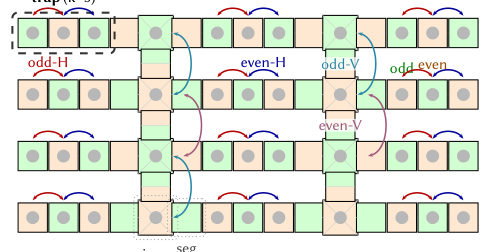
<figcaption class="paper-figure-caption"><b>Fig 1.</b> Figure 2. WISE chip layout [71] . Each small square is one zone. All zones follow an odd ( ) / even ( ) checkerboard with odd zones hav- ing even zones as neighbors. Four global reconfiguration primitives exist: parallel-odd-H, parallel-even-H, parallel-odd-V and parallel- even-V. parallel-odd-H swaps the marked red adjancent ions within every trap (shown here) and swaps edge ions between traps using the segments and junctions. Similarly, parallel-odd-V swaps ions between at odd junction positions through the vertical columns.</figcaption>
</figure>
<figure class="paper-figure-card">
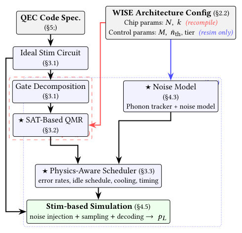
<figcaption class="paper-figure-caption"><b>Fig 2.</b> Figure 1. Overview of WISER (★= new tool contributions). A QEC code and a WISE configuration are fed as inputs. Output includes logical error rate 𝑝𝐿and QEC cycle time. The QEC spec is first converted to an architecture-agnostic, noiseless Stim circuit. Then it is lowered to the gate set supported by WISE and mapped and scheduled on the architecture. Following this, a WISE noise model-specific Stim simulation is run to determine QEC parameters. Changing chip parameters requires recompilation through the red dashed box; changing control parameters requires re-simulation through the dotted box, bypassing the SAT solver.</figcaption>
</figure>
<figure class="paper-figure-card">
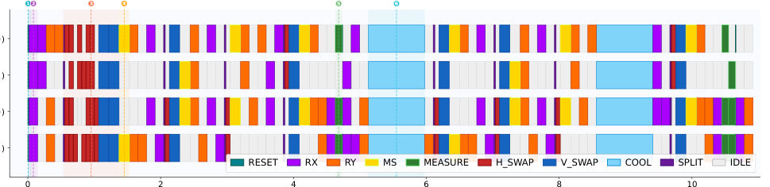
<figcaption class="paper-figure-caption"><b>Fig 3.</b> Figure 3. Compiled schedule for the [[4, 1, 2]] rotated surface code (𝑘=2, ¯𝑛th=1.5), two syndrome-extraction rounds. The 7 qubits occupy 8 zones in a 2 × 2 grid of traps (trap coordinates given on y-axis); 8 MS gates per syndrome-extraction round must be scheduled across global odd-even reconfiguration passes. Per-trap Gantt chart with horizontal-swap (red) and vertical-swap (blue) passes from SAT-compiled reconfiguration (§3.2) interleaving with type-homogeneous gate blocks. Light-blue cooling bars appear when ¯𝑛exceeds ¯𝑛th; grey bars show idle dephasing windows.</figcaption>
</figure>
<figure class="paper-figure-card">
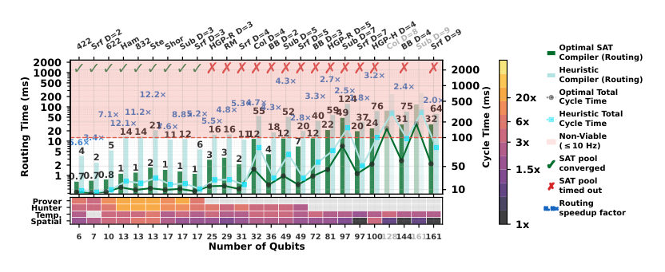
<figcaption class="paper-figure-caption"><b>Fig 4.</b> Figure 4. Top: SAT vs. greedy routing across 6–161-qubit QEC workloads: routing time (bars, left axis) and logical cycle time (lines, right axis). Blue labels show SAT speedup; green ticks mark proven optima and red crosses 12-hour timeouts. Shading marks designs below 10 Hz logical clock speed. Bottom: contribution of SAT portfolio worker classes (Appendix B); lighter cells indicate larger routing improvements, white cells no contribution. SAT improves routing by 2−12× across the architecturally relevant WISE design space. Results use 𝑘= 2, 𝑀= 4, optimistic hardware tier, a near-optimal operating point that makes these gains conservative.</figcaption>
</figure>
<figure class="paper-figure-card">
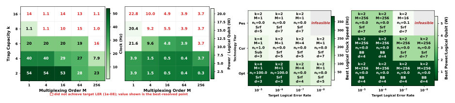
<figcaption class="paper-figure-caption"><b>Fig 5.</b> Figure 5. Left: Architecture-level decision maps over (𝑘, 𝑀) under the Optimistic technology tier, 10−8 logical error rate target. 1: maximum logical clock speed achievable for each (𝑘, 𝑀) pair after selecting the feasible (code,𝑛𝑡) combination. 2: minimum power per logical qubit under the same feasibility criterion. Cell annotations report the numerical values used for ranking. Configurations with 𝑘= 16 are omitted because no feasible operating point satisfies the logical error-rate target. Right: sensitivity sweep of the best 𝑘, 𝑀, ¯𝑛, code, distance choices across target logical error rates and hardware tiers. 1. ≈1W per logical qubit is achieved only up to 10−6 error-rates with BB codes...</figcaption>
</figure>
</div>

<p><strong>Summary.</strong> This paper introduces WISER, a comprehensive framework to systematically explore the design space for fault-tolerant trapped-ion quantum computing using the advanced WISE architecture. By integrating compilation, noise modeling, and simulation, the authors determine that while WISE offers wiring advantages, achieving high logical throughput requires substantial, complementary improvements in both physical error rates and circuit depth. This work highlights a critical trade-off between hardware scalability and computational performance.</p>
<p><strong>Why it may be interesting.</strong> It provides a rigorous, systematic, and hardware-aware methodology for assessing the scalability limits of next-generation quantum hardware, which is crucial for theoretical work aiming to bridge abstract quantum codes to physical implementation.</p>
<details>
<summary>Detailed structure</summary>
<p><strong>Main problem.</strong> The paper addresses the feasibility of implementing fault-tolerant quantum computation (FTQC) on trapped-ion systems using the novel, wiring-constrained WISE architecture.</p>
<p><strong>Main result.</strong> The study identifies a narrow feasible design space requiring specific hardware choices (two-ion traps, moderate multiplexing) and warns of a fundamental trade-off between wiring scalability and logical throughput.</p>
<p><strong>Method.</strong> A cross-layer architectural design-space exploration framework (WISER) was developed, combining novel compilation, detailed noise modeling, and simulation to estimate logical performance metrics.</p>
<p><strong>Model / system.</strong> The system is trapped-ion quantum computing, comparing the conventional QCCD architecture against the highly scalable, but restrictive, WISE architecture. The analysis incorporates detailed noise models for electric field fluctuations, heating, and crosstalk.</p>
<p><strong>Key observables.</strong> Logical clock speed, logical error rate ($p_L$), and the required cycle time to achieve target error thresholds (e.g., $< 10^{-8}$).</p>
<p><strong>Important parameters / regimes.</strong> Multiplexing order ($M$), trap capacity ($k$), physical error rates, and the required reduction factors for circuit depth and physical errors ($> 10	imes$ and $> 100	imes$, respectively).</p>
<p><strong>Assumptions / limitations.</strong> The analysis assumes that the QEC specification can be mapped to a noiseless circuit before being lowered to the WISE gate set, and it models noise sources like phonon accumulation and correlated crosstalk.</p>
<p><strong>Figures summary.</strong> Figures illustrate the WISER workflow (QEC Spec $
ightarrow$ Compilation $
ightarrow$ Simulation), show convergence traces for SAT-based optimization (e.g., Steane code), and detail the physical layout and noise sources.</p>
<p><strong>Paper structure.</strong> The paper is structured around the WISER framework, detailing the compilation process, the integration of noise models (including electric field noise and crosstalk), and finally, using SAT solvers to systematically explore the design space and determine performance bounds.</p>
</details>
<details>
<summary>Abstract</summary>
<p>Trapped-ion quantum computers are a leading candidate for scalable fault-tolerant quantum computing, but conventional Quantum Charge-Coupled Device (QCCD) architectures face severe wiring and power constraints as systems scale. The recently proposed WISE promise orders-of-magnitude reductions in wiring complexity but fundamentally alter the hardware--software interface, making it unclear whether such restrictive architectures can feasibly execute quantum error correction (QEC) and eventually support fault-tolerant workloads. We present WISER, a cross-layer architectural design-space exploration framework for globally controlled trapped-ion systems, to determine whether WISE can support early FTQC, and what hardware/compiler/QEC choices are needed. WISER combines novel WISE-specific compilation, noise modelling, and simulation and integrated them into a unified framework. WISER provides comparative lower-bound estimates of logical clock speed and logical error rate, rather than absolute hardware prediction, enabling us to identify viable operating regions while ruling out infeasible ones. To our knowledge, it is the first systematic design space exploration study targeted at WISE and scalable architectures beyond QCCD. Using WISER, we identify a narrow feasible design space requiring two-ion traps, moderate control multiplexing, aggressive recooling, and high-rate bivariate-bicycle codes. Even under $\sim 10\times$ improvements in physical errors, the lower-bound cycle time to achieve $< 10^{-8}$ logical error is $\approx 100\,ms$, which is $3\times$ slower than local control. These results expose a fundamental trade-off between wiring scalability and logical throughput, suggesting that practical early fault-tolerant operation requires complementary $> 10\times$ physical error rate reductions along with substantial $> 100\times$ reduction in fault-tolerant circuit-depth.</p>
</details>
<p><sub><a href="#top">↑ back to top</a></sub></p>

<p><a id="paper-2609.14272"></a></p>
<h3 id="epr-steering-boundaries-from-a-universal-spectral-equation"><a href="http://arxiv.org/abs/2609.14272v1">EPR-steering boundaries from a universal spectral equation</a></h3>
<p><strong>Authors:</strong> Yu-Xuan Zhang, Leong-Chuan Kwek, Jing-Ling Chen<br>
<strong>Type:</strong> theory · <strong>Category:</strong> quantum information and computing · <strong>PDF:</strong> <a href="https://arxiv.org/pdf/2609.14272v1">https://arxiv.org/pdf/2609.14272v1</a><br>
<strong>Analysis basis:</strong> full PDF text, analyzed in chunks
<strong>Topic relevance:</strong> <code>quantum measurements</code> <strong>3/5</strong></p>
<div class="figure-strip-hint">↔ Scroll figures horizontally</div>
<div class="paper-figures-scroll">
<figure class="paper-figure-card">
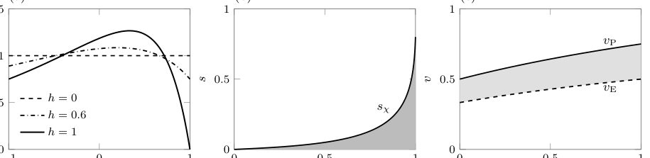
<figcaption class="paper-figure-caption"><b>Fig 1.</b> FIG. 1. Common ensembles and steering boundaries. (a) Normalized hidden-state weights for the family in Eq. (12). Each curve has unit mass and zero first moment; its axial outcome division is n3 = h/3. (b) Source anisotropy χ and relative bias s: the whole displayed domain has an explicit PVM spectrum, which also supplies all POVMs in the gray subset s ≤sχ; s1 = 4/5. (c) White-noise visibility versus source bias. States below vE are separable, those above vP are PVM-steerable, and the gray band is entangled and PVM-unsteerable. Along vP the negativity is 1/8; for h ≤4/5 this curve is also the all-POVM boundary.</figcaption>
</figure>
<figure class="paper-figure-card">
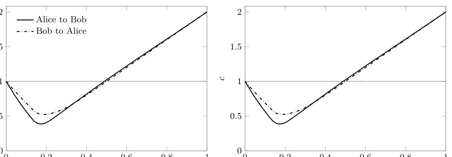
<figcaption class="paper-figure-caption"><b>Fig 2.</b> FIG. 1. Common measurement thresholds with one-way steering in the Bowles family. Solid and dash-dotted curves show Alice-to-Bob and Bob-to-Alice scales; the dotted line is c = 1. Both measurement classes have the forward threshold 0.488862 . . . and reverse threshold 1/2, giving the same nonzero one-way interval. Panels (a,b) correspond to POVMs and PVMs.</figcaption>
</figure>
<figure class="paper-figure-card">
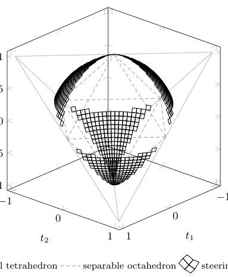
<figcaption class="paper-figure-caption"><b>Fig 3.</b> FIG. 2. Common steering boundary of Bell-diagonal states. The outer tetrahedron is the physical state space, and the inner octahedron is the separable set. The black mesh is the exact surface cA = cP = 1 from Eq. (S168); the space between this surface and the octahedron consists of entangled states with an all-POVM parent.</figcaption>
</figure>
<figure class="paper-figure-card">
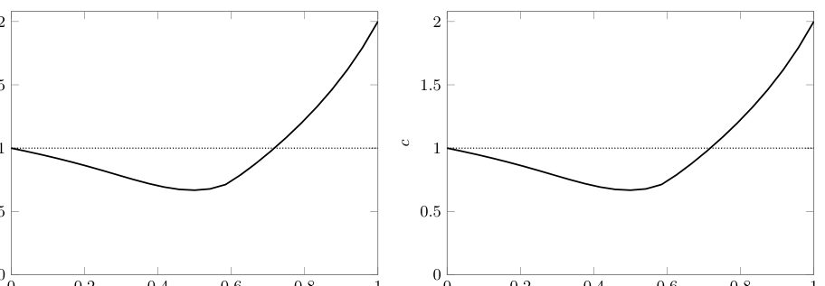
<figcaption class="paper-figure-caption"><b>Fig 4.</b> FIG. 3. Common directional scales in Gisin states at θ = π/8. The weight λ interpolates between a classical mixture and a pure entangled state. At the entanglement boundary λ = 2 − √</figcaption>
</figure>
<figure class="paper-figure-card">
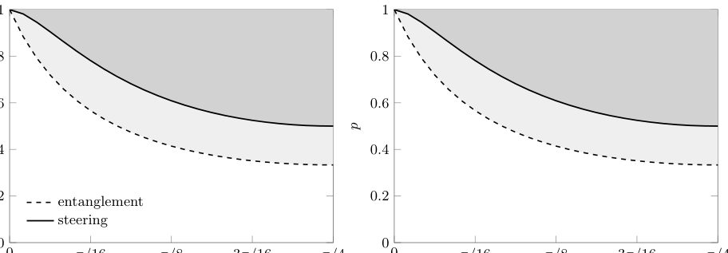
<figcaption class="paper-figure-caption"><b>Fig 5.</b> FIG. 4. Entanglement and steering in generalized Werner states. The dashed and solid curves are the entanglement and steering thresholds. A horizontal line fixes the visibility p and hence the full global spectrum while the Schmidt angle changes. White, light-gray, and dark-gray regions denote separable states, entangled unsteerable states, and steerable states. The right edge is the Werner line. Panels (a,b) correspond to POVMs and PVMs.</figcaption>
</figure>
</div>

<p><strong>Summary.</strong> This work derives the fundamental mathematical constraints, via a universal spectral equation, that define the boundaries of EPR-steering correlations in bipartite quantum systems. By solving this equation, the authors provide exact formulas for calculating steering scales for both projective and generalized measurements in qubits. This advances the understanding of quantum correlations by precisely quantifying how much non-local resource is required to simulate local hidden-state preparations.</p>
<p><strong>Why it may be interesting.</strong> The rigorous mathematical determination of steering boundaries provides quantitative tools to test the limits of quantum correlations, which is fundamental to understanding quantum communication protocols and resource theories.</p>
<details>
<summary>Detailed structure</summary>
<p><strong>Main problem.</strong> The paper determines the boundaries for EPR-steering correlations by deriving a universal spectral equation governing the common hidden-state ensemble underlying remote conditional preparations.</p>
<p><strong>Main result.</strong> The solution provides exact algebraic and integral formulas for evaluating steering scales for both projective and generalized measurements in qubits, establishing the minimum required hidden-state mass.</p>
<p><strong>Method.</strong> The authors use a universal spectral equation derived from comparing required conditional responses against the common hidden-state ensemble, employing convexity arguments and functional minimization.</p>
<p><strong>Model / system.</strong> The analysis is performed on arbitrary finite-dimensional bipartite quantum systems, with detailed focus on qubits and generalized Positive Operator-Valued Measures (POVMs).</p>
<p><strong>Key observables.</strong> Steering Scale ($c_M(A)$), Boundary Negativity, White Noise Tolerated, and the spectral density $u$.</p>
<p><strong>Important parameters / regimes.</strong> The steering scale $c_M$ (mass limit), the bias parameter $h$, and the white noise level $v$.</p>
<p><strong>Assumptions / limitations.</strong> The analysis relies on convexity arguments to ensure unique solutions for the density $u$, and specific conditions are derived for the attainment of mass bounds.</p>
<p><strong>Figures summary.</strong> Figures illustrate common ensembles and steering boundaries for various state families (e.g., Bell-diagonal, Werner states), contrasting physical entanglement boundaries with the derived steering boundaries.</p>
<p><strong>Paper structure.</strong> The paper progresses by establishing the spectral equation, deriving specific algebraic/integral solutions for qubits, and then applying this framework to analyze how noise and filtering affect the directional steering boundaries across different state classes.</p>
</details>
<details>
<summary>Abstract</summary>
<p>We determine EPR-steering boundaries from a universal spectral equation for the common hidden-state ensemble underlying remote conditional preparations. In arbitrary finite-dimensional bipartite systems, its solution gives the ensemble weights, with limiting mass equal to the steering scale. For qubits, algebraic and integral formulas eliminate measurement variables and resolve outcome partitions, making both projective and generalized-measurement scales exactly evaluable at all parameters. Further analytical solution reconstructs the optimal hidden-state distribution on a domain of biased, anisotropic states. Along an explicit family, the white noise tolerated by projective steering halves while the boundary negativity stays at $1/8$. For the original Bowles states, we obtain the complete one-way interval under arbitrary measurements.</p>
</details>
<p><sub><a href="#top">↑ back to top</a></sub></p>

<p><a id="paper-2609.14197"></a></p>
<h3 id="fast-cz-gate-in-hybrid-fluxonium-transmon-systems-with-tunable-couplers"><a href="http://arxiv.org/abs/2609.14197v1">Fast CZ gate in hybrid fluxonium-transmon systems with tunable couplers</a></h3>
<p><strong>Authors:</strong> Peng Xu, Yunlong Wang, Yuechen Mu, Ling Jiang, Peng Zhao, Shengjun Wu, Xiaohong Yan<br>
<strong>Type:</strong> theory · <strong>Category:</strong> quantum information and computing · <strong>PDF:</strong> <a href="https://arxiv.org/pdf/2609.14197v1">https://arxiv.org/pdf/2609.14197v1</a><br>
<strong>Analysis basis:</strong> full PDF text, analyzed in chunks
<strong>Topic relevance:</strong> <code>QC/QI experiment</code> <strong>3/5</strong></p>
<div class="figure-strip-hint">↔ Scroll figures horizontally</div>
<div class="paper-figures-scroll">
<figure class="paper-figure-card">
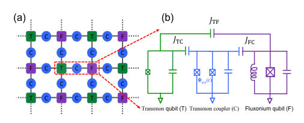
<figcaption class="paper-figure-caption"><b>Fig 1.</b> FIG. 1. (a) Schematic of a two-dimensional coupled lattice of a hy- brid superconducting qubit system. Purple and green squares denote fluxonium (F) and transmon (T) qubits, respectively, and blue circles denote transmon couplers (C). Red dashed boxes indicate the small- est coupled model. (b) Schematic of the smallest coupled TCF cir- cuit. The coupler mediates both a static direct qubit-qubit coupling and a dynamically tunable interaction controlled by the external flux Φext(t).</figcaption>
</figure>
<figure class="paper-figure-card">
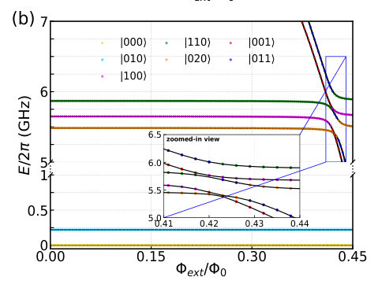
<figcaption class="paper-figure-caption"><b>Fig 2.</b> FIG. 2. (a) Calculated ZZ interaction strength between the flux- onium and transmon qubits as a function of the coupler flux bias Φext(t). The coupler is assumed to remain in its ground state |0⟩. The residual ZZ interaction is strongly suppressed when the coupler is biased near its maximum-frequency point, indicating that the ef- fective qubit–qubit interaction can be substantially reduced through appropriate coupler biasing. (b) Energy spectrum of the hybrid su- perconducting architecture as a function of the external flux bias ap- plied to the tunable coupler. The inset provides a magnified view of a representative avoided crossing.</figcaption>
</figure>
<figure class="paper-figure-card">
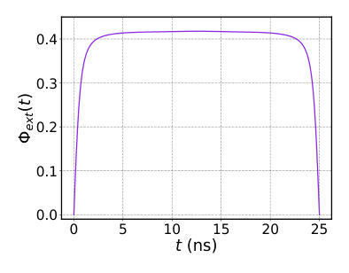
<figcaption class="paper-figure-caption"><b>Fig 3.</b> FIG. 3. Typical optimized magnetic-flux pulse applied to the tunable coupling transmon for N = 3 with 25 ns. The pulse is parameterized by the optimized Fourier-cosine coefficients.</figcaption>
</figure>
<figure class="paper-figure-card">
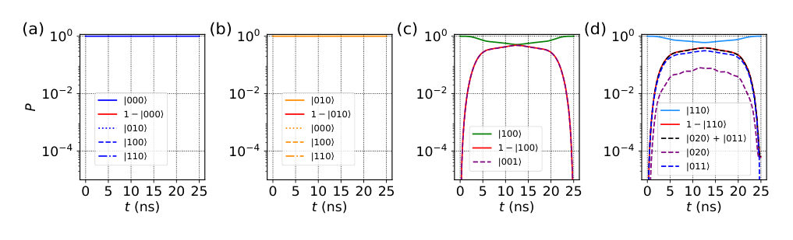
<figcaption class="paper-figure-caption"><b>Fig 4.</b> FIG. 4. Time evolution of the computational-state populations and leakage populations during the implementation of the CZ gate under the optimized magnetic-flux pulse. Panels (a)-(d) correspond to the initial states |00⟩(|000⟩), |01⟩(|010⟩), |10⟩(|100⟩), and |11⟩(|110⟩), respectively. The applied system parameters are outlined in Table I and optimized flux pulse is shown in Fig. 3.</figcaption>
</figure>
<figure class="paper-figure-card">
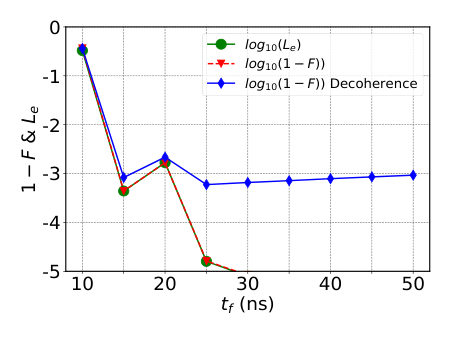
<figcaption class="paper-figure-caption"><b>Fig 5.</b> FIG. 5. Gate performance of the optimized CZ gate as a function of the gate duration tf. The gate infidelity (1 −F) and leakage error Le are shown for the proposed configuration, with the decoherence- limited results obtained from the Lindblad master equation.The gate duration is varied from 10 to 50 ns.</figcaption>
</figure>
</div>

<p><strong>Summary.</strong> This paper proposes a robust, single-parameter flux control scheme to implement a high-fidelity Controlled-Z gate in hybrid superconducting circuits combining fluxonium and transmon qubits. By dynamically tuning the coupler via external magnetic flux, the authors suppress unwanted residual interactions while accumulating the necessary conditional phase. The results show fast gate operation (25 ns) with fidelity exceeding 99.9%, validating this approach for complex quantum hardware.</p>
<p><strong>Why it may be interesting.</strong> This work provides a concrete, hardware-agnostic protocol for high-fidelity quantum gates in heterogeneous superconducting platforms, which is highly relevant for quantum information scientists designing next-generation quantum processors.</p>
<details>
<summary>Detailed structure</summary>
<p><strong>Main problem.</strong> The primary challenge is realizing a high-fidelity Controlled-Z (CZ) gate in complex, hybrid superconducting quantum architectures.</p>
<p><strong>Main result.</strong> The authors demonstrate a microwave-free CZ gate achievable in 25 ns with fidelities exceeding 99.99% in simulations, establishing single-parameter flux control as a robust method.</p>
<p><strong>Method.</strong> The method involves dynamically engineering the qubit-qubit interaction by modulating the external magnetic flux applied to a tunable coupler, optimizing the pulse shape using Fourier-cosine parameterization.</p>
<p><strong>Model / system.</strong> The system is a hybrid circuit composed of a fluxonium qubit, a fixed-frequency transmon qubit, and a flux-tunable transmon coupler. The Hamiltonian is controlled by the external magnetic flux applied to the coupler.</p>
<p><strong>Key observables.</strong> Average gate fidelity (target &gt; 99.9%), leakage error (target &lt; 10^-5), and the conditional phase accumulation ($\phi_{cond}$).</p>
<p><strong>Important parameters / regimes.</strong> Gate time ($\approx 25 	ext{ ns}$), coupling strengths ($J_{TF}, J_{TC}, J_{FC}$), and the external magnetic flux $\Phi_{	ext{ext}}(t)$.</p>
<p><strong>Assumptions / limitations.</strong> The approach relies on single-parameter flux control for simplicity and robustness, and the analysis accounts for decoherence effects.</p>
<p><strong>Figures summary.</strong> Figure 1 illustrates the schematic of the coupled TCF circuit, while Figure 2(b) shows how varying the external flux causes avoided crossings, which are key to understanding the interaction and leakage.</p>
<p><strong>Paper structure.</strong> The paper first establishes the physical challenge in hybrid systems, details the Hamiltonian and the flux-tuning methodology, presents the optimization procedure to suppress errors, and concludes with high-fidelity performance metrics.</p>
</details>
<details>
<summary>Abstract</summary>
<p>Hybrid superconducting architectures combining different types of qubits offer a promising platform for exploiting their complementary advantages, yet high-fidelity entangling gates remain challenging because of strong nonlinearities and residual qubit-qubit interactions. Here, we propose a high-fidelity controlled-Z (CZ) gate for a hybrid circuit comprising a fluxonium qubit, a fixed-frequency transmon qubit, and a flux-tunable transmon coupler. By modulating only the external magnetic flux applied to the coupler, the qubit-qubit interaction is dynamically engineered for conditional-phase accumulation while the residual interaction is suppressed at idle, mitigating spectator-induced errors. We employ a low-dimensional Fourier-cosine pulse parameterization and a physically motivated cost function to independently suppress conditional-phase errors and leakage from the computational subspace. Numerical simulations demonstrate that a microwave-free CZ gate can be realized within $25 \mathrm{ns}$, with an average gate fidelity exceeding $99.99\%$ and leakage below $10^{-5}$. Using experimentally relevant superconducting-qubit parameters and accounting for decoherence, the proposed scheme maintains a CZ-gate fidelity of approximately $99.9\%$. We further extend the analysis to larger coupled architectures and find that the CZ-gate infidelity remains below $10^{-4}$ in the presence of spectator qubits. These results establish single-parameter flux control as a simple and robust approach for realizing high-fidelity entangling gates in heterogeneous superconducting quantum architectures.</p>
</details>
<p><sub><a href="#top">↑ back to top</a></sub></p>

<p><a id="paper-2609.13584"></a></p>
<h3 id="identifiability-in-quantum-state-process-and-network-tomography"><a href="http://arxiv.org/abs/2609.13584v1">Identifiability in Quantum State, Process, and Network Tomography</a></h3>
<p><strong>Authors:</strong> Athira Kalavampara Raghunadhan, Matheus Guedes De Andrade, Don Towsley, Indrakshi Dey, Daniel Kilper, Nicola Marchetti<br>
<strong>Type:</strong> theory · <strong>Category:</strong> quantum information and computing · <strong>PDF:</strong> <a href="https://arxiv.org/pdf/2609.13584v1">https://arxiv.org/pdf/2609.13584v1</a><br>
<strong>Analysis basis:</strong> full PDF text, analyzed in chunks
<strong>Topic relevance:</strong> <code>quantum measurements</code> <strong>3/5</strong></p>
<div class="figure-strip-hint">↔ Scroll figures horizontally</div>
<div class="paper-figures-scroll">
<figure class="paper-figure-card">
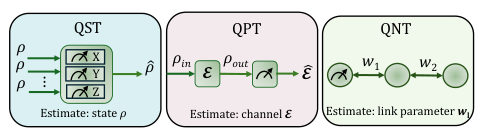
<figcaption class="paper-figure-caption"><b>Fig 1.</b> Fig. 1: Quantum State, Process, and Network Tomography</figcaption>
</figure>
</div>

<p><strong>Summary.</strong> This work compares the mathematical requirements for determining unknown parameters in Quantum State, Process, and Network Tomography. Using the Fisher Information Matrix, the authors show that while state and process tomography are robust under ideal measurements, network tomography is highly sensitive to the physical topology and the paths chosen for probing the links. This highlights the structural constraints inherent in distributed quantum measurements.</p>
<p><strong>Why it may be interesting.</strong> It provides a rigorous mathematical framework (FIM analysis) to determine when quantum parameters (states, channels, or network links) can be uniquely determined from experimental measurements, which is crucial for designing practical quantum experiments.</p>
<details>
<summary>Detailed structure</summary>
<p><strong>Main problem.</strong> The paper compares the conditions required for parameter identifiability across three quantum tomography tasks: State (QST), Process (QPT), and Network (QNT).</p>
<p><strong>Main result.</strong> While QST and QPT achieve full rank under Informationally Complete measurements, QNT's identifiability critically depends on the topology and placement of probe paths relative to the underlying network links.</p>
<p><strong>Method.</strong> Identifiability is rigorously assessed by analyzing the rank of the Fisher Information Matrix (FIM) for each tomography problem.</p>
<p><strong>Model / system.</strong> The study models quantum systems using density matrices ($
ho$) for state estimation, quantum channels ($\mathcal{E}$) for process characterization, and a quantum network structured as an undirected graph $G=(V, E)$ for link parameter inference.</p>
<p><strong>Key observables.</strong> The rank of the Fisher Information Matrix (FIM) determines identifiability; specific observables include measurement probabilities $p_m$ and link parameters $\mathbf{w}$.</p>
<p><strong>Important parameters / regimes.</strong> The number of independent measurement copies ($N$) scales the FIM eigenvalues linearly but does not change the rank if the measurement set is insufficient.</p>
<p><strong>Assumptions / limitations.</strong> The analysis assumes the FIM expressions are derived for one copy per measurement configuration, and QNT requires probe paths to provide independent information about the links.</p>
<p><strong>Figures summary.</strong> Figure 2 illustrates that for insufficient probe paths, the FIM remains singular (zero eigenvalue persists across $N$), whereas sufficient probes lead to all eigenvalues growing linearly with $N$.</p>
<p><strong>Paper structure.</strong> The paper introduces the three tomography problems, develops the FIM formalism for each, analyzes the rank conditions for QST and QPT (showing IC sufficiency), and then focuses on the structural constraints imposed by the graph topology for QNT.</p>
</details>
<details>
<summary>Abstract</summary>
<p>Quantum State Tomography (QST), Quantum Process Tomography (QPT), and Quantum Network Tomography (QNT) are related parameter-estimation problems that aim to reconstruct different physical quantities. QST estimates an unknown quantum state, represented by its density matrix, from the measurement outcomes. QPT characterises an unknown quantum channel using known input states and measurements of the corresponding outputs. QNT, in contrast, aims to infer parameters associated with individual links from end-to-end probe measurements collected at accessible monitor nodes. A key distinction among the three tomography problems lies in the conditions required to achieve identifiability, the ability to determine unknown parameters uniquely from the available measurement statistics. In QST and QPT, the experimenter can choose an Informationally Complete (IC) measurement set. QNT limits the reachable measurements to what topology and monitor placement allow, so the admissible probe paths fix the information available about the link parameters. This work studies all three tomography problems through a common Fisher Information Matrix (FIM). We factorise QNT FIM and show that its rank equals the rank of the path-link incidence matrix at every interior parameter value, so local and global identifiability coincide. We then show that QST and QPT attain full rank under IC settings, QNT loses rank when the probe paths leave link parameters indistinguishable, and increasing the number of copies scales the FIM eigenvalues while leaving its rank fixed.</p>
</details>
<p><sub><a href="#top">↑ back to top</a></sub></p>

<p><a id="paper-2609.15323"></a></p>
<h3 id="statistical-levels-and-spatial-modes-of-fock-space-heterogeneity-in-many-body-localization-crossovers"><a href="http://arxiv.org/abs/2609.15323v1">Statistical levels and spatial modes of Fock-space heterogeneity in many-body localization crossovers</a></h3>
<p><strong>Authors:</strong> Yu-Jing Liu, Chen Cheng<br>
<strong>Type:</strong> theory · <strong>Category:</strong> disordered systems and neural networks · <strong>PDF:</strong> <a href="https://arxiv.org/pdf/2609.15323v1">https://arxiv.org/pdf/2609.15323v1</a><br>
<strong>Analysis basis:</strong> full PDF text, analyzed in chunks
<strong>Topic relevance:</strong> <code>analog quantum simulation</code> <strong>3/5</strong></p>
<div class="figure-strip-hint">↔ Scroll figures horizontally</div>
<div class="paper-figures-scroll">
<figure class="paper-figure-card">
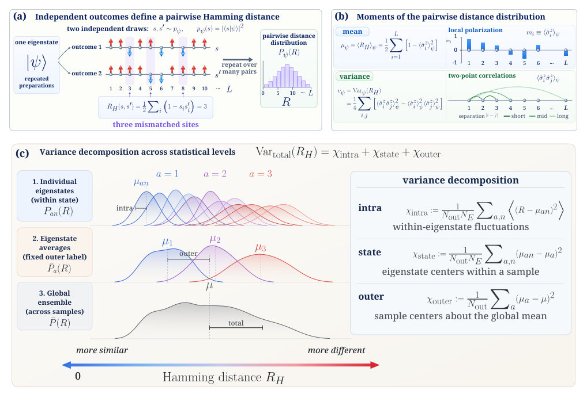
<figcaption class="paper-figure-caption"><b>Fig 1.</b> FIG. 1. Configuration-space distance and nested heterogeneity. (a) Two configurations drawn independently according to the configuration probability distribution pψ(s) of one eigenstate define Pψ(R). (b) A smaller mean squared local polarization gives a larger mean distance, while the variance contains local and two-point z-spin structure. (c) The mixtures Pan →¯Pa →¯P separate intra-eigenstate variance, state-to-state center variance, and outer-center variance. The colors identify samples a, with several eigenstates shown for each sample. A sample is a disorder realization or is defined by one quasiperiodic phase offset. All curves, displacements, and markers are schematic.</figcaption>
</figure>
<figure class="paper-figure-card">
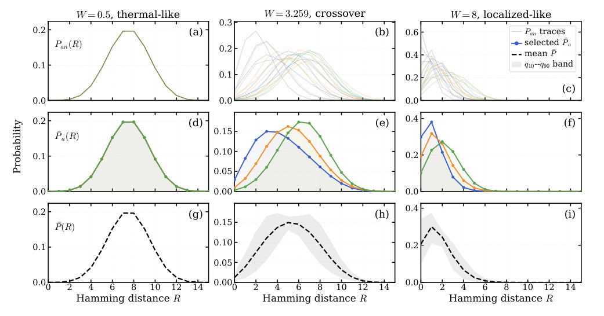
<figcaption class="paper-figure-caption"><b>Fig 2.</b> FIG. 2. Illustration of the nested distance hierarchy in the uniform-random open Ising chain at L = 15 and NE = 50. The columns use W = 0.5, 3.259, and 8, spanning thermal-like, crossover, and localized-like profiles. The rows show selected normalized intra-eigenstate distributions Pan(R), selected state-averaged distributions ¯Pa(R), and the full mixture ¯P(R). The shaded band in the bottom row is the pointwise 10th–90th percentile envelope of ¯Pa(R) among outer realizations. Individual curves illustrate the conditioning levels.</figcaption>
</figure>
<figure class="paper-figure-card">
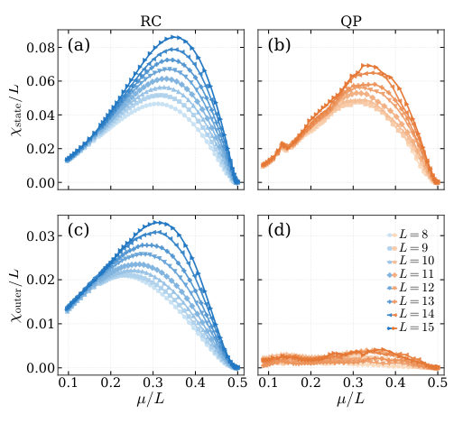
<figcaption class="paper-figure-caption"><b>Fig 3.</b> FIG. 4. Matched-cosine fluctuation channels re-expressed through the descriptive local-memory coordinate µ/L. Pan- els (a) and (b) show χstate/L for RC and QP, and panels (c) and (d) show χouter/L, for L = 8, . . . , 15 and NE = 100. RC samples are disorder realizations and QP samples are defined by global quasiperiodic phase offsets. The channels use the population normalization of Eq. (6). Each curve follows its own native-W route; equal µ/L denotes equal basis-resolved average local memory.</figcaption>
</figure>
<figure class="paper-figure-card">
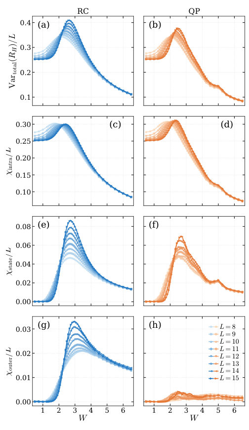
<figcaption class="paper-figure-caption"><b>Fig 4.</b> FIG. 3. Variance anatomy along the native finite-size crossover routes of the open Ising chain with the matched RC (left) and QP (right) fields. From top to bottom, the rows show Vartotal(RH)/L, χintra/L, χstate/L, and χouter/L for L = 8, . . . , 15 and NE = 100. Outer samples are indepen- dent RC phase patterns or QP global phases. All channels use the population normalization of Sec. II B and satisfy Eq. (7). The horizontal axis is each ensemble’s native amplitude W.</figcaption>
</figure>
<figure class="paper-figure-card">
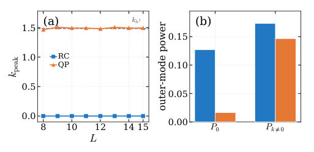
<figcaption class="paper-figure-caption"><b>Fig 5.</b> FIG. 6. Mode organization of the matched-cosine outer co- variance. Panel (a) shows the peak wave number of Souter(k) in a continuous wave-number scan for RC and QP at L = 8, . . . , 15 and NE = 100. For each ensemble and size, the displayed point uses the sampled native W whose NE = 100 result lies closest to µ/L = 0.35, without interpolation; the horizontal guide marks the nonzero squared-field mode kh2. Panel (b) separates the uniform power P0 = Souter(0) from the summed nonzero-mode power P̸=0 for the representative points in Fig. 5, using the complete L-mode discrete Fourier grid and the same 1/L spectrum normalization. Their sum is Ptot.</figcaption>
</figure>
</div>

<p><strong>Summary.</strong> This work introduces a statistical framework using configuration-space distance distributions to dissect the sources of sample-to-sample fluctuations in many-body systems near MBL crossovers. By decomposing the total variance into contributions from within eigenstates, between states, and between samples, the authors pinpoint that sample variation is dominated by outer-ensemble effects. This provides a detailed geometric picture of sample-dependent quantum memory.</p>
<p><strong>Why it may be interesting.</strong> The rigorous statistical decomposition of memory fluctuations across different ensemble realizations provides a powerful diagnostic tool for understanding sample-dependent physics in disordered quantum systems, which is highly relevant to AMO and open quantum systems.</p>
<details>
<summary>Detailed structure</summary>
<p><strong>Main problem.</strong> The paper aims to understand the origins and size dependence of sample-to-sample fluctuations in many-body systems, particularly near many-body localization (MBL) crossovers.</p>
<p><strong>Main result.</strong> The clearest source of heterogeneity is found at the sample-to-sample level, and the analysis successfully separates contributions from within eigenstates, between eigenstates, and across different physical samples.</p>
<p><strong>Method.</strong> The authors develop a statistical framework based on configuration-space distance distributions and employ variance decomposition to hierarchically separate fluctuation sources.</p>
<p><strong>Model / system.</strong> The study applies this framework to random-cosine and quasiperiodic-cosine Ising ensembles, comparing them to a fixed-magnetization spin chain.</p>
<p><strong>Key observables.</strong> Configuration-space distance distribution, distance center, and the decomposition of total variance into intra-eigenstate, state-to-state, and outer-ensemble contributions.</p>
<p><strong>Important parameters / regimes.</strong> Nominal field strength, system size (at exact diagonalization limits), and the type of disorder (random vs. quasiperiodic).</p>
<p><strong>Assumptions / limitations.</strong> The primary findings are based on calculations performed at exact diagonalization sizes.</p>
<p><strong>Figures summary.</strong> Figures illustrate the variance hierarchy and entropy channels, comparing random and quasiperiodic ensembles across different system sizes and field strengths.</p>
<p><strong>Paper structure.</strong> The paper develops a statistical framework using distance distributions and variance decomposition, applies it to random and quasiperiodic Ising models, and analyzes the spatial organization of fluctuations across different statistical levels.</p>
</details>
<details>
<summary>Abstract</summary>
<p>Near many-body localization crossovers, local memory fluctuates strongly among eigenstates and ensemble realizations, but the observed heterogeneity   combines contributions from different statistical levels. We develop a statistical framework based on configuration-space distance distributions that uses   a variance decomposition to separate fluctuations within eigenstates, between eigenstates of one sample, and between samples. Applying this framework to   random-cosine and quasiperiodic-cosine Ising ensembles with the same one-site field marginal, we find that, at the exact-diagonalization sizes studied,   the clearest difference occurs among disorder realizations or quasiperiodic phase samples, whereas within-eigenstate and within-sample eigenstate-to-   eigenstate contributions remain broadly comparable. Spatial covariances show that random outer fluctuations have a much stronger uniform component,   whereas quasiperiodic phase fluctuations are organized more strongly at finite wave number and partly cancel in the spatial average controlling the   distance center. We find that, near the crossover in the random ensemble, the ensemble-averaged distance center is particularly sensitive to changes in   the nominal field strength. Combined with sample-to-sample differences in the realized field amplitude, this mean response accounts for much of the   sample-to-sample variation in the distance center. Analysis of half-chain entanglement further shows that its sample-to-sample fluctuations likewise   reflect the combined effects of amplitude variations and its own mean response. An application to a fixed-magnetization spin chain demonstrates the   framework in a constrained configuration space. Resolving both statistical level and spatial mode therefore provides a more complete picture of sample-   dependent many-body memory and its configuration-space probability geometry.</p>
</details>
<p><sub><a href="#top">↑ back to top</a></sub></p>

<p><a id="paper-2609.13392"></a></p>
<h3 id="orientation-dependent-pauli-noise-in-one-dimensional-discrete-time-quantum-walks"><a href="http://arxiv.org/abs/2609.13392v1">Orientation-dependent Pauli noise in one-dimensional discrete-time quantum walks</a></h3>
<p><strong>Authors:</strong> Alejandro Contreras Reynoso, Adrian Ortega, Thomas Gorin<br>
<strong>Type:</strong> theory · <strong>Category:</strong> other · <strong>PDF:</strong> <a href="https://arxiv.org/pdf/2609.13392v1">https://arxiv.org/pdf/2609.13392v1</a><br>
<strong>Analysis basis:</strong> full PDF text, analyzed in chunks
<strong>Topic relevance:</strong> <code>analog quantum simulation</code> <strong>2/5</strong> · <code>correlated / nonlocal dissipation</code> <strong>2/5</strong> · <code>methods for driven-dissipative</code> <strong>2/5</strong> · <code>Keldysh / 2PI / non-Gaussian methods</code> <strong>1/5</strong> · <code>driven-dissipative phase transition</code> <strong>1/5</strong> · <code>non-equilibrium universality</code> <strong>1/5</strong> · <code>quantum measurements</code> <strong>1/5</strong></p>
<div class="figure-strip-hint">↔ Scroll figures horizontally</div>
<div class="paper-figures-scroll">
<figure class="paper-figure-card">
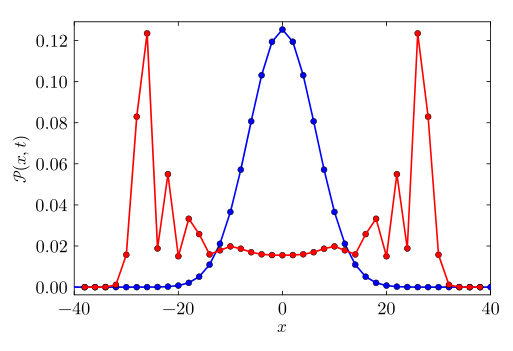
<figcaption class="paper-figure-caption"><b>Fig 1.</b> FIG. 1: Probability distribution in position for 40 steps where the ideal coin is the Hadamard operation from Eq. (5). Every walk starts in position x0 = 0 and initial coin state 1 √</figcaption>
</figure>
<figure class="paper-figure-card">
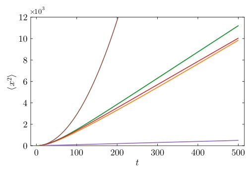
<figcaption class="paper-figure-caption"><b>Fig 2.</b> FIG. 2: Variance of Q0(x, t) defined in Eq. (35) as function of time, for the noise models from Table I with p = 0.02: X- and Z-noise (green solid line), depolarizing noise (red), and Y -noise (orange). The noiseless quantum walk (brown) and the classical random walk (purple) are also shown.</figcaption>
</figure>
<figure class="paper-figure-card">
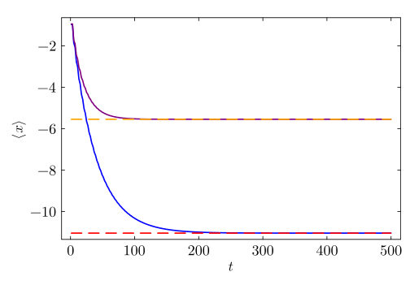
<figcaption class="paper-figure-caption"><b>Fig 3.</b> FIG. 3: Average position of the walker with initial coin state (|0⟩+ |1⟩)/ √</figcaption>
</figure>
<figure class="paper-figure-card">
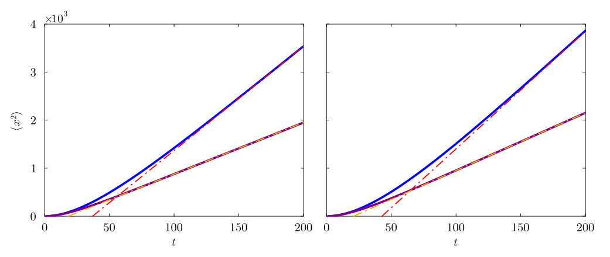
<figcaption class="paper-figure-caption"><b>Fig 4.</b> FIG. 4: Second moment ⟨x2⟩of the walker as a function of time for depolarizing noise (left panel) and for X- and Z-noise (right panel). Solid lines show the result for numerical simulations, dash-dotted lines the long-time approximation µ2, given in Eqs. (74) and (73), respectively. The noise level is p = 0.02 for the blue and red lines and p = 0.04 for the purple and orange lines.</figcaption>
</figure>
<figure class="paper-figure-card">

<figcaption class="paper-figure-caption"><b>Fig 5.</b> FIG. 5: Average position of the walker with initial coin state (|0⟩+ |1⟩)/ √</figcaption>
</figure>
</div>

<p><strong>Summary.</strong> This paper analyzes how different types of Pauli noise affect the long-time spreading of a quantum walk in one dimension. Using advanced spectral methods in Fourier space, the authors show that noise causes a transition from ballistic to diffusive spreading, with the rate of this transition depending sensitively on the noise's orientation relative to the walk's dynamics. This highlights that the quantum-to-classical transition is highly sensitive to the specific noise mechanism and initial quantum state.</p>
<p><strong>Why it may be interesting.</strong> This work provides a detailed, mathematically rigorous analysis of decoherence effects on quantum transport, which is highly relevant for understanding decoherence in quantum simulators or solid-state quantum devices.</p>
<details>
<summary>Detailed structure</summary>
<p><strong>Main problem.</strong> The study investigates how the orientation of Pauli noise affects the long-time transport dynamics of a one-dimensional discrete-time quantum walk (DTQW). The goal is to characterize the crossover from ballistic to diffusive spreading under various noise conditions.</p>
<p><strong>Main result.</strong> All noise types cause a crossover to diffusive spreading, but the approach rate differs significantly: it is exponentially fast for X-, Z-, and depolarizing noise, while it is algebraic for Y-noise. The quantum-to-classical transition depends critically on the relative alignment of the noise and the initial state.</p>
<p><strong>Method.</strong> The authors employ a Fourier-space Pauli-superoperator formalism to track the evolution of the quantum state. They calculate position moments and analyze the asymptotic behavior using matrix methods and spectral decomposition.</p>
<p><strong>Model / system.</strong> The system is a one-dimensional DTQW whose evolution is governed by a conditional shift and a coin operation, subjected to Pauli noise acting on the coin. The analysis uses the Fourier basis representation for the density matrix.</p>
<p><strong>Key observables.</strong> First two position moments ($\langle x 
angle, \langle x^2 
angle$), probability distribution $P(x, t)$, and the asymptotic behavior of these quantities.</p>
<p><strong>Important parameters / regimes.</strong> Noise type (X, Y, Z, depolarizing), noise strength ($p$), and time ($t$).</p>
<p><strong>Assumptions / limitations.</strong> The analysis assumes the coin's invariant Bloch-sphere axis is orthogonal to the axis fixed by the conditional shift. Calculations rely on approximations for large times and specific spectral decompositions for noise analysis.</p>
<p><strong>Figures summary.</strong> Figure 1 compares probability distributions for noiseless (ballistic) versus maximal depolarizing noise (diffusive/binomial) over 40 steps using a Hadamard coin.</p>
<p><strong>Paper structure.</strong> The paper develops the formalism in Fourier space, derives expressions for moments, analyzes the crossover from ballistic to diffusive regimes based on noise type, and concludes by detailing the conditions governing the quantum-to-classical transition.</p>
</details>
<details>
<summary>Abstract</summary>
<p>Discrete-time quantum walks exhibit ballistic spreading that is highly sensitive to decoherence. We study the long-time dynamics of a one-dimensional discrete-time quantum walk under Pauli noise acting on the coin. Choosing the unitary coin such that its invariant Bloch-sphere axis is orthogonal to the axis fixed by the conditional shift, we identify the distinct effects of noise aligned with either dynamical axis or orthogonal to both. Using a Fourier-space Pauli-superoperator formalism, we derive expressions for the first two position moments and long-time asymptotics for X-, Y-, Z-, and depolarizing noise. All channels induce a crossover from ballistic to diffusive spreading, with a second moment growing linearly at long times. The approach to this regime is channel dependent: it is exponentially fast for X-, Z-, and depolarizing noise, but algebraic, with a leading $t^{-1/2}$ correction, for Y-noise. The position distributions retain distinct finite-noise signatures, including a Gaussian-like profile with a central depression for Y-noise. In the maximal-noise limit, depolarizing, Y-, and Z-noise yield the classical binomial distribution for arbitrary initial coin states, whereas X-noise does so only when the initial state has no component along the noise axis. Thus, the quantum-to-classical transition is governed by the relative alignment of the noise, the coherent walk dynamics, and the initial state.</p>
</details>
<p><sub><a href="#top">↑ back to top</a></sub></p>

<p><a id="paper-2609.13375"></a></p>
<h3 id="unitary-evolution-of-an-evaporating-black-hole-in-canonical-quantum-gravity"><a href="http://arxiv.org/abs/2609.13375v1">Unitary evolution of an evaporating black hole in canonical quantum gravity</a></h3>
<p><strong>Authors:</strong> Sijia Wang, Robert B. Mann, Dong-han Yeom<br>
<strong>Type:</strong> theory · <strong>Category:</strong> other · <strong>PDF:</strong> <a href="https://arxiv.org/pdf/2609.13375v1">https://arxiv.org/pdf/2609.13375v1</a><br>
<strong>Analysis basis:</strong> full PDF text, analyzed in chunks
<strong>Topic relevance:</strong> <code>Keldysh / 2PI / non-Gaussian methods</code> <strong>2/5</strong> · <code>quantum measurements</code> <strong>2/5</strong> · <code>analog quantum simulation</code> <strong>1/5</strong> · <code>correlated / nonlocal dissipation</code> <strong>1/5</strong> · <code>driven-dissipative phase transition</code> <strong>1/5</strong> · <code>methods for driven-dissipative</code> <strong>1/5</strong> · <code>non-equilibrium universality</code> <strong>1/5</strong></p>
<div class="figure-strip-hint">↔ Scroll figures horizontally</div>
<div class="paper-figures-scroll">
<figure class="paper-figure-card">

<figcaption class="paper-figure-caption"><b>Fig 1.</b> FIG. 1: (a) Penrose diagram for an evaporating black hole described by semi-classical physics. (b) The pre-Hawking</figcaption>
</figure>
<figure class="paper-figure-card">

<figcaption class="paper-figure-caption"><b>Fig 2.</b> Fig. 1 illustrates four scenarios that have been proposed previously.</figcaption>
</figure>
<figure class="paper-figure-card">

<figcaption class="paper-figure-caption"><b>Fig 3.</b> FIG. 2: (a)-(b) Topology change will be mediated by the Euclidean propagator that connects from |hi⟩(i = 1, 2, ...) to</figcaption>
</figure>
<figure class="paper-figure-card">

<figcaption class="paper-figure-caption"><b>Fig 4.</b> Fig. 2(b), corresponding to Minkowski spacetime filled by emitted radiation. Smoothly connecting h5 to hf</figcaption>
</figure>
<figure class="paper-figure-card">

<figcaption class="paper-figure-caption"><b>Fig 5.</b> FIG. 3: (Top panel) Particle indices, where |S⟩is the interior state of the star and |R⟩is the Hawking radiation state.</figcaption>
</figure>
</div>

<p><strong>Summary.</strong> This paper tackles the black hole information loss paradox by proposing a quantum gravity framework that avoids the event horizon. It demonstrates how using coherent states allows the system to maintain unitary evolution at the fundamental quantum level while reproducing semi-classical dynamics at a coarse-grained level. The work suggests that resolving the paradox may require accepting a temporary violation of the standard entropy bound.</p>
<p><strong>Why it may be interesting.</strong> While focused on gravity, the core concepts of unitary evolution, information preservation, and the necessity of non-trivial quantum corrections to classical dynamics are highly relevant to open quantum systems and quantum field theory in curved spacetime.</p>
<details>
<summary>Detailed structure</summary>
<p><strong>Main problem.</strong> The paper addresses the black hole information loss paradox, reconciling general relativity's prediction of evaporation with quantum mechanics' requirement for information conservation.</p>
<p><strong>Main result.</strong> The authors propose a framework using coherent states in event-horizon-free scenarios that allows for both semi-classical dynamics and fully unitary time evolution, potentially resolving the paradox.</p>
<p><strong>Method.</strong> The analysis employs canonical quantum gravity techniques, utilizing the Wheeler-DeWitt equation, Euclidean path integrals, and functional Schrödinger equations.</p>
<p><strong>Model / system.</strong> The system is an evaporating black hole, analyzed in approaches that avoid the classical event horizon. The formalism treats time evolution via coherent states in the gravitational phase space.</p>
<p><strong>Key observables.</strong> Entanglement entropy, Bekenstein-Hawking entropy, and the violation of the entropy bound.</p>
<p><strong>Important parameters / regimes.</strong> The coarse-grained vs. fine-grained description, and the non-orthogonality of quasi-classical states ($\epsilon^{|	ilde{n}-	ilde{m}|}$).</p>
<p><strong>Assumptions / limitations.</strong> The framework assumes the existence of coherent states in the gravitational phase space and that the violation of the entropy bound may be a justifiable price for unitarity.</p>
<p><strong>Figures summary.</strong> Figures illustrate proposed black hole evaporation scenarios without horizons, the causal structure connecting initial and final states via Euclidean propagators, and the setup for toy models demonstrating energy conservation.</p>
<p><strong>Paper structure.</strong> The paper moves from revisiting non-horizon evaporation models to introducing a coherent state framework. It then develops the formalism using path integrals and functional Schrödinger equations to show how unitarity and semi-classical limits can coexist, concluding with a discussion on the implications for entropy bounds.</p>
</details>
<details>
<summary>Abstract</summary>
<p>We propose a framework for understanding the information loss paradox in the context of canonical quantum gravity. We first revisit several approaches to black hole evaporation that do not involve an event horizon. In these models, we assume that each time slice corresponds to a coherent state in the gravitational phase space. Due to this property, the quantum state associated with a given spatial configuration will have a nonzero overlap with another spatial configuration. We show how this property can account for both semi-classical dynamics and unitary time evolution. We introduce an explicit toy model that follows semi-classical time evolution at the coarse-grained level; in addition, its time evolution is unitary at the fine-grained level. The only price that one must pay is the violation of the entropy bound; we discuss reasons why this may be justifiable.</p>
</details>
<p><sub><a href="#top">↑ back to top</a></sub></p>

<p><a id="paper-2609.14406"></a></p>
<h3 id="avalanches-can-increase-stored-energy-in-a-granular-fault"><a href="http://arxiv.org/abs/2609.14406v1">Avalanches can increase stored energy in a granular fault</a></h3>
<p><strong>Authors:</strong> A. Douin, E. Saurety, V. Levy dit Vehel, L. Combe, L. Vanel, O. Cochet-Escartin, O. Ramos<br>
<strong>Type:</strong> experiment · <strong>Category:</strong> disordered systems and neural networks · <strong>PDF:</strong> <a href="https://arxiv.org/pdf/2609.14406v1">https://arxiv.org/pdf/2609.14406v1</a><br>
<strong>Analysis basis:</strong> full PDF text, analyzed in chunks
<strong>Topic relevance:</strong> <code>analog quantum simulation</code> <strong>2/5</strong> · <code>driven-dissipative phase transition</code> <strong>2/5</strong> · <code>non-equilibrium universality</code> <strong>2/5</strong> · <code>Frenkel-Kontorova</code> <strong>1/5</strong> · <code>correlated / nonlocal dissipation</code> <strong>1/5</strong></p>
<div class="figure-strip-hint">↔ Scroll figures horizontally</div>
<div class="paper-figures-scroll">
<figure class="paper-figure-card">

<figcaption class="paper-figure-caption"><b>Fig 1.</b> Figure 1: Mechanical and acoustic signals measured during a 4-day experiment (A) Vertical</figcaption>
</figure>
<figure class="paper-figure-card">

<figcaption class="paper-figure-caption"><b>Fig 2.</b> Figure 2: Four coupled modes of avalanches behavior. (C) Relation between the signed and</figcaption>
</figure>
<figure class="paper-figure-card">

<figcaption class="paper-figure-caption"><b>Fig 3.</b> Figure 3: Impact of avalanches’ mode on fault dynamics (A-B) Scatter plot of the emitted</figcaption>
</figure>
<figure class="paper-figure-card">

<figcaption class="paper-figure-caption"><b>Fig 4.</b> Figure 4: Structural Response (A) Mean grain displacement along the driving direction, ⟨Δ𝑥(𝑦)⟩,</figcaption>
</figure>
</div>

<p><strong>Summary.</strong> This experimental work examines energy dynamics in a granular fault under slow shearing, finding that some avalanches can paradoxically increase stored elastic energy rather than just dissipating it. By measuring mechanical, acoustic, and force network changes, the authors distinguish between energy-releasing and energy-storing failure modes. This suggests that failure in disordered materials can be a process of stress redistribution rather than simple relaxation.</p>
<p><strong>Why it may be interesting.</strong> The study of energy dissipation and storage in driven, disordered mechanical systems provides an experimental analogue for understanding energy flow and non-equilibrium dynamics in complex, disordered quantum or classical systems.</p>
<details>
<summary>Detailed structure</summary>
<p><strong>Main problem.</strong> The study investigates whether avalanches in granular faults can increase stored mechanical energy, challenging the conventional view that failure is purely dissipative.</p>
<p><strong>Main result.</strong> Avalanches can reorganize stress into a more highly loaded configuration, evidenced by energy-storing events (Q4) that combine dilation with increased elastic energy, suggesting energy storage is possible.</p>
<p><strong>Method.</strong> The researchers used simultaneous measurements of torque, layer thickness, acoustic emissions, and photoelastic force networks during slow shearing of a granular fault.</p>
<p><strong>Model / system.</strong> The system is a granular fault composed of photoelastic disks confined between fixed walls, subjected to slow, quasi-static shearing and compression.</p>
<p><strong>Key observables.</strong> Torque ($\Gamma$), layer thickness ($h$), acoustic emissions, and mechanical energy variations ($\Delta E_{grains}, \Delta E_h$).</p>
<p><strong>Important parameters / regimes.</strong> Loading rate, confinement geometry, and the classification of avalanche regimes (Q1-Q4).</p>
<p><strong>Assumptions / limitations.</strong> The analysis relies on energy conservation principles ($\Delta E = \Delta E_{grains} + \Delta E_h$) and quasi-static loading assumptions.</p>
<p><strong>Figures summary.</strong> Figures show time series of mechanical and acoustic signals over long experiments, illustrating major energy release and storage events.</p>
<p><strong>Paper structure.</strong> The paper systematically analyzes different avalanche regimes (Q1-Q4) by correlating mechanical energy changes, structural rearrangements (force networks), and acoustic signatures to distinguish between energy-releasing and energy-storing failure modes.</p>
</details>
<details>
<summary>Abstract</summary>
<p>Slowly sheared granular materials generally store mechanical energy and dilate between abrupt failures that release energy and compact the material. Here, simultaneous measurements of torque, layer thickness, acoustic emission, and photoelastic force networks reveal all four combinations of energy release or storage with contraction or dilation in a compressed granular fault. Most strikingly, some avalanches both dilate the layer and increase the elastic energy transmitted to the resisting boundary. These events reorganize force chains beyond the shear band and produce a distinct acoustic response. The results show that an avalanche need not relax a driven disordered material; it can instead redistribute stress into a more highly loaded configuration, a mechanism with potential relevance to the physics of both laboratory and natural faults.</p>
</details>
<p><sub><a href="#top">↑ back to top</a></sub></p>

<p><a id="paper-2609.14251"></a></p>
<h3 id="nonlinear-dynamics-of-random-neural-networks-with-second-order-synaptic-motifs"><a href="http://arxiv.org/abs/2609.14251v1">Nonlinear dynamics of random neural networks with second-order synaptic motifs</a></h3>
<p><strong>Authors:</strong> Jun Yang, Hannah Choi<br>
<strong>Type:</strong> theory · <strong>Category:</strong> disordered systems and neural networks · <strong>PDF:</strong> <a href="https://arxiv.org/pdf/2609.14251v1">https://arxiv.org/pdf/2609.14251v1</a><br>
<strong>Analysis basis:</strong> full PDF text, analyzed in chunks
<strong>Topic relevance:</strong> <code>Keldysh / 2PI / non-Gaussian methods</code> <strong>2/5</strong> · <code>methods for driven-dissipative</code> <strong>2/5</strong> · <code>analog quantum simulation</code> <strong>1/5</strong> · <code>driven-dissipative phase transition</code> <strong>1/5</strong> · <code>non-equilibrium universality</code> <strong>1/5</strong></p>
<div class="figure-strip-hint">↔ Scroll figures horizontally</div>
<div class="paper-figures-scroll">
<figure class="paper-figure-card">

<figcaption class="paper-figure-caption"><b>Fig 1.</b> FIG. 1. Second-order synaptic motifs and the eigenspectrum of the connectivity matrix. (a) Schematic of the four second- order motifs. (b) The eigenvalue bulk forms an ellipse whose size and aspect ratio are determined by the gain g and motif strengths. Parameters: N = 2000, J0 = 0, τ con = τ div = τ chn = 0.1, τ rec = 0 and g = 1. (c) Positive chain correlations can additionally generate a pair of real outlier eigenvalues outside the bulk. Orange dots indicate the outliers obtained numerically from the sampled connectivity matrix, and stars mark the corresponding theoretical predictions. Parameters: N = 2000, J0 = −2, Nτ chn = 7, τ con = τ div = τ chn, τ rec = 0, and g = 1. In (b)&amp;(c),...</figcaption>
</figure>
<figure class="paper-figure-card">

<figcaption class="paper-figure-caption"><b>Fig 2.</b> FIG. 2. Positive chain correlations induce a ferromagnetic structure. (a) Phase diagram in the g–Nτ chn plane. HC and SC denote homogeneous chaos and structured chaos, respectively. Colored phase boundaries are obtained from simulations, and white curves show theoretical predictions. Square markers indicate the parameter points used in panel (b). (b) Representative eigenspectra and activity trajectories in the four phases. In the eigenvalue panels, black dashed lines mark the stability boundary, orange dots show measured outlier eigenvalues, and stars show the theoretical outlier prediction. In the trajectory panels, blue curves show the population-averaged activity ⟨ϕ(x(t))⟩, and gray...</figcaption>
</figure>
<figure class="paper-figure-card">

<figcaption class="paper-figure-caption"><b>Fig 3.</b> FIG. 3. Negative chain correlations can generate limit cycles (LCs). (a) Phase diagram in the g–|Nτchn| plane. Colored regions show phases identified numerically, while white curves show theoretical stability boundaries. (b,e,h) Example eigenspectra in the HC, LC+Chaos, and LC phases, respectively. Blue curves and stars indicate theoretical predictions. Black dashed lines mark the stability boundary. (c,f,i) Population-averaged activity ⟨ϕ(x(t))⟩from six different initial conditions for the networks shown in (b,e,h). (d,g,j) Numerical solutions of Cϕ(τ) obtained from the single-site DMFT equation at the corresponding parameter values. Blue curves denote solutions initialized near a...</figcaption>
</figure>
<figure class="paper-figure-card">

<figcaption class="paper-figure-caption"><b>Fig 4.</b> FIG. 4. Convergent motifs suppress temporal chaos. (a) Fraction of temporal variance, qT , as a function of the motif ratio τ div/τ con for the odd activation function ϕ = tanh. Solid curves show the DMFT prediction, while dots show the mean across realizations obtained from direct simulation. Each curve corresponds to a fixed value of Nτ chn. (b) Same as (a), but for the nonnegative activation function ϕ = (1 + tanh)/2. (c) Representative trajectories of ϕ(xi(t)) for ϕ = (1+tanh)/2 and Nτ chn = 0.25, illustrating the reduction of temporal chaos as convergent correlations become stronger. In (a)&amp;(b), N = 8000, error bars represent ±SD over 24 realizations. In (c), N = 2000. Other...</figcaption>
</figure>
<figure class="paper-figure-card">

<figcaption class="paper-figure-caption"><b>Fig 5.</b> FIG. 6. Positive reciprocal and negative chain correlations slow down the dynamics and eventually produce a glassy phase. (a) Negative chain correlations reduce the imaginary semi-axis of the eigenvalue bulk when the spectral edge geff is held constant. Solid curves show the theoretical boundary, while dots show a numerical example with N = 2000. (b) The autocorrelation timescale increases with negative chain correlation strength. Dots show the median across 36 network realizations from direct simulation for each parameter value, while solid curves show the DMFT prediction. Error bars representing ±SD are smaller than the markers. Panels (c)–(e) correspond to positive reciprocal...</figcaption>
</figure>
</div>

<p><strong>Summary.</strong> This theoretical work analyzes how specific local synaptic motifs in neural networks modify their collective dynamics using Dynamic Mean-Field Theory. The study shows that these motifs are not merely minor perturbations but fundamental structural elements that dictate the network's dynamical regimes, ranging from stable oscillations to glassy states. This establishes motif structure as a key determinant of cortical circuit function.</p>
<p><strong>Why it may be interesting.</strong> The detailed mathematical framework connecting local structural motifs to global dynamical stability (eigenvalues, chaos) provides a powerful, structured analogy to how local interactions govern emergent behavior in complex quantum many-body systems or disordered quantum materials.</p>
<details>
<summary>Detailed structure</summary>
<p><strong>Main problem.</strong> The paper investigates how specific local synaptic motif structures (chain, reciprocal, convergent, divergent) influence the nonlinear dynamics of random neural networks, moving beyond models assuming independent connectivity.</p>
<p><strong>Main result.</strong> These second-order motifs fundamentally reshape the network's Jacobian eigenvalue bulk and dictate rich dynamical regimes, such as ferromagnetic states, limit cycles, and glassy dynamics, by acting as structural constraints on activity.</p>
<p><strong>Method.</strong> The authors employ Dynamic Mean-Field Theory (DMFT) and the path-integral formalism to derive theoretical predictions about the network's spectral properties and long-time dynamics.</p>
<p><strong>Model / system.</strong> The system is a nonlinear firing-rate network modeled by the Sompolinsky–Crisanti–Sommers (SCS) equation. Connectivity is generalized Gaussian, incorporating correlations defined by four second-order synaptic motifs.</p>
<p><strong>Key observables.</strong> Jacobian eigenvalue bulk and outliers, effective gain ($g_{	ext{eff}}$), Lyapunov spectrum, participation-ratio dimension, and dynamical regimes (e.g., ferromagnetic states, limit cycles).</p>
<p><strong>Important parameters / regimes.</strong> The Pearson correlation coefficients ($ au$) characterizing the four motifs ($   au_{    ext{chn}},  au_{    ext{rec}},  au_{    ext{con}},  au_{    ext{div}}$) are the key structural parameters.</p>
<p><strong>Assumptions / limitations.</strong> The analysis assumes the connectivity entries are jointly Gaussian, and the theory extends the DMFT framework to incorporate these motif correlations.</p>
<p><strong>Figures summary.</strong> Figure 1 schematically illustrates the four motifs and shows how motif correlations affect the eigenvalue bulk and outliers of the Jacobian.</p>
<p><strong>Paper structure.</strong> The paper develops a dynamic mean-field theory by incorporating motif correlations into the network dynamics. It analyzes the resulting spectral changes, detailing how positive and negative chain correlations lead to distinct dynamical instabilities, and separately analyzes the roles of convergent and divergent motifs on chaos and noise.</p>
</details>
<details>
<summary>Abstract</summary>
<p>Classical theories of random neural networks typically assume independent connectivity, overlooking the local motif structures prevalent in biological circuits. Here, we investigate how four second-order synaptic motifs (chain, reciprocal, convergent, and divergent) shape the dynamics of nonlinear firing-rate networks. While previous studies have established that chain correlations generate outlier eigenvalues, we demonstrate that these motifs also jointly reshape the Jacobian eigenvalue bulk. Using the path-integral formalism, we derive a dynamic mean-field theory which reveals that the chain motif acts as a retarded feedback of the ensemble-mean activity through the response kernel, producing a rich repertoire of dynamical regimes, including ferromagnetic states and limit cycles. At sufficiently large magnitude, negative chain correlations produce a glassy, multistable regime that was previously mainly associated with partially symmetric networks. Our theory also distinguishes convergent from divergent motifs: divergent correlations primarily rescale temporal noise, while convergent correlations suppress temporal chaos by converting nonzero mean activity into quenched heterogeneity. Finally, analyses of the Lyapunov spectrum and participation-ratio dimension show that motif structure changes the geometry of chaotic activity, reducing entropy production and attractor dimensionality even when the effective spectral edge is held fixed. Together, these findings establish second-order motifs as a fundamental structural mechanism governing the dynamical regimes of local cortical circuits.</p>
</details>
<p><sub><a href="#top">↑ back to top</a></sub></p>

<p><a id="paper-2609.14428"></a></p>
<h3 id="indistinguishability-theory-for-identical-particles-with-invariant-degrees-of-freedom"><a href="http://arxiv.org/abs/2609.14428v1">Indistinguishability Theory for Identical Particles with Invariant Degrees of Freedom</a></h3>
<p><strong>Authors:</strong> Valery Shchesnovich<br>
<strong>Type:</strong> theory · <strong>Category:</strong> other · <strong>PDF:</strong> <a href="https://arxiv.org/pdf/2609.14428v1">https://arxiv.org/pdf/2609.14428v1</a><br>
<strong>Analysis basis:</strong> full PDF text, analyzed in chunks
<strong>Topic relevance:</strong> <code>analog quantum simulation</code> <strong>2/5</strong> · <code>interference shaping light</code> <strong>2/5</strong> · <code>quantum measurements</code> <strong>2/5</strong></p>
<div class="figure-strip-hint">↔ Scroll figures horizontally</div>
<div class="paper-figures-scroll">
<figure class="paper-figure-card">

<figcaption class="paper-figure-caption"><b>Fig 1.</b> Low-resolution page preview, page 2</figcaption>
</figure>
<figure class="paper-figure-card">

<figcaption class="paper-figure-caption"><b>Fig 2.</b> Low-resolution page preview, page 3</figcaption>
</figure>
<figure class="paper-figure-card">

<figcaption class="paper-figure-caption"><b>Fig 3.</b> Low-resolution page preview, page 4</figcaption>
</figure>
<figure class="paper-figure-card">

<figcaption class="paper-figure-caption"><b>Fig 4.</b> Low-resolution page preview, page 5</figcaption>
</figure>
<figure class="paper-figure-card">

<figcaption class="paper-figure-caption"><b>Fig 5.</b> Low-resolution page preview, page 6</figcaption>
</figure>
</div>

<p><strong>Summary.</strong> This paper introduces a novel theory to describe the partial indistinguishability of identical particles possessing internal, invariant degrees of freedom. It defines quantitative measures, such as the indistinguishability function and projective measures, that characterize how close the system is to ideal bosonic or fermionic behavior. The results provide experimentally testable bounds on indistinguishability using marginal measurements.</p>
<p><strong>Why it may be interesting.</strong> This work provides a rigorous mathematical framework for quantifying quantum indistinguishability beyond the standard Bose/Fermi statistics, which is crucial for understanding multi-particle quantum interference in optics and quantum simulation.</p>
<details>
<summary>Detailed structure</summary>
<p><strong>Main problem.</strong> The paper develops a comprehensive theory to quantify the partial indistinguishability of identical particles when their degrees of freedom are partitioned into visible (unitarily evolving) and internal (dynamically invariant) parts.</p>
<p><strong>Main result.</strong> The indistinguishability is characterized by an 'indistinguishability function' and is quantified by projective measures, which yield a hierarchy of upper bounds on the observable indistinguishability.</p>
<p><strong>Method.</strong> The authors use first-quantization and second-quantization formalisms, employing symmetry projectors (related to the symmetric group) to decompose the state and define various indistinguishability measures.</p>
<p><strong>Model / system.</strong> The model consists of $n$ identical bosons or fermions whose single-particle Hilbert space is split into visible and internal degrees of freedom. The evolution is restricted to unitary transformations acting only on the visible part.</p>
<p><strong>Key observables.</strong> Indistinguishability Measure $D(\hat{\varrho})$, Emulation Measure $eD(\hat{\varrho})$, and the Projective Measure $D_n$ on the symmetry spectrum.</p>
<p><strong>Important parameters / regimes.</strong> The number of particles ($n$), the structure of the symmetry group ($S_n$), and the parameters defining the visible state $\hat{\varrho}(	ext{vis})$.</p>
<p><strong>Assumptions / limitations.</strong> The analysis assumes the existence of a suitable family of interferometers for reconstruction and relies on the structure of unitary linear evolutions.</p>
<p><strong>Figures summary.</strong> Not specified in the notes.</p>
<p><strong>Paper structure.</strong> The paper progresses by defining the core indistinguishability measures, deriving the explicit form of the visible state in terms of the indistinguishability function, and finally establishing the hierarchy of upper bounds using marginal projective measures.</p>
</details>
<details>
<summary>Abstract</summary>
<p>Identical particles have dynamically invariant labels in all setups where their degrees of freedom can be partitioned into two parts, which we call internal and visible, with the visible part subject to unitary evolution, while the dynamically invariant internal part accounts for the partial distinguishability of particles. We give the explicit form of the visible state in terms of the indistinguishability function, generalizing the standard symmetrization/antisymmetrization postulate for bosons/fermions with internal modes. The indistinguishability function on the symmetric group accounts for the permutation symmetry of the dynamically invariant label state and gives a self-contained description of the symmetry spectrum of the visible state. It is shown that the indistinguishability of single particles emitted independently from a stable source is completely characterized by the projective measures on the symmetry spectrum. We reveal a hierarchy of successive upper bounds on the projective measure of indistinguishability in terms of marginal projective measures. We point out an experimentally feasible way to get the upper bounds on the indistinguishability of an arbitrarily large number of single photons by direct experimental readout of their marginal projective measures. We also analyze the indistinguishability of coherent superpositions and convex mixtures and resolve a recently posed problem.</p>
</details>
<p><sub><a href="#top">↑ back to top</a></sub></p>

<p><a id="paper-2609.15844"></a></p>
<h3 id="absolute-frequency-measurement-of-the-math784mathcamath785math-clock-transition-using-a-gnss-link-to-the-si-second"><a href="http://arxiv.org/abs/2609.15844v1">Absolute frequency measurement of the $^{40}$Ca$^{+}$ clock transition using a GNSS link to the SI second</a></h3>
<p><strong>Authors:</strong> M. Guevara-Bertsch, M. K. Joshi, M. I Hussain, R. Blatt, C. F. Roos<br>
<strong>Type:</strong> experiment · <strong>Category:</strong> other · <strong>PDF:</strong> <a href="https://arxiv.org/pdf/2609.15844v1">https://arxiv.org/pdf/2609.15844v1</a><br>
<strong>Analysis basis:</strong> full PDF text, analyzed in chunks
<strong>Topic relevance:</strong> <code>QC/QI experiment</code> <strong>2/5</strong> · <code>quantum measurements</code> <strong>2/5</strong> · <code>quantum optics experiment</code> <strong>1/5</strong></p>
<div class="figure-strip-hint">↔ Scroll figures horizontally</div>
<div class="paper-figures-scroll">
<figure class="paper-figure-card">

<figcaption class="paper-figure-caption"><b>Fig 1.</b> FIG. 1. (a) Reduced energy level scheme of 40Ca+. The S1/2 ↔D5/2 quadrupole transition at 729 nm is used as a clock transition. Doppler cooling and state detection are carried out on the cycling transition S1/2 ↔P1/2 at 397 nm. Two in- frared lasers at 866 nm and 854 nm pump out the metastable D-states to prevent population trapping. (b) Transitions f1, f2, f3, f4, f5, f6 are probed in order to cancel the linear Zeeman shift, ac-Zeeman shift and the quadrupole shift.</figcaption>
</figure>
<figure class="paper-figure-card">

<figcaption class="paper-figure-caption"><b>Fig 2.</b> FIG. 3. Fractional modified Allan deviation plot of the frequency comparison. The data points are presented in blue. The dotted pink line is a fit that follows σy(τ) = 6.83 × 10−13τ −1/2.</figcaption>
</figure>
<figure class="paper-figure-card">

<figcaption class="paper-figure-caption"><b>Fig 3.</b> FIG. 4. Standard fractional Allan deviation plot of the frequency comparison of two 40Ca+ clock divided by √</figcaption>
</figure>
<figure class="paper-figure-card">

<figcaption class="paper-figure-caption"><b>Fig 4.</b> FIG. 5. Overview of absolute frequency measurements of the 40Ca+ clock transition- The measurement result from our campaign (IBK ’21) is in agreement with the latest measurements of the Wuhan group (WIPM ’12, WIPM ’14- ’15 and WIPM’23) [8, 13, 14] and Weizmann group (WIS’25) [9]. They are however in disagreement with the three first measurements performed between 2009 and 2012 [2, 11, 12]. As a reference the recommended frequency and uncertainty by the CIPM (International Committee for Weights and Mea- sures) in 2021 is shown in light blue [40].</figcaption>
</figure>
</div>

<p><strong>Summary.</strong> This experiment achieved an absolute frequency measurement of the $^{40}	ext{Ca}^{+}$ clock transition with unprecedented precision, linking the laboratory clock to the SI second via a GNSS link. By employing Ramsey spectroscopy across multiple Zeeman transitions and meticulously correcting for systematic shifts, the authors determined the frequency to $1.5 	imes 10^{-15}$ uncertainty. This work significantly advances the field of optical atomic clocks and timekeeping standards.</p>
<p><strong>Why it may be interesting.</strong> This work represents a state-of-the-art demonstration of linking fundamental atomic physics measurements (clock transitions) to global time standards using advanced satellite technology, pushing the limits of precision measurement in AMO physics.</p>
<details>
<summary>Detailed structure</summary>
<p><strong>Main problem.</strong> The paper reports on the absolute frequency measurement of the highly precise $^{40}	ext{Ca}^{+}$ clock transition relative to the SI second.</p>
<p><strong>Main result.</strong> The measured absolute frequency was determined to be $411,042,129,776,401.2 \pm 0.6 	ext{ Hz}$ with a fractional uncertainty of $1.5 	imes 10^{-15}$.</p>
<p><strong>Method.</strong> The measurement utilized a Global Navigation Satellite System (GNSS) link to compare the ion clock frequency against the Coordinated Universal Time (UTC) realized at PTB.</p>
<p><strong>Model / system.</strong> The system involves a $^{40}	ext{Ca}^{+}$ ion trapped in a linear Paul trap, with the clock transition ($4s\ ^2S_{1/2} \leftrightarrow 3d\ ^2D_{5/2}$) probed using Ramsey spectroscopy across six different Zeeman sublevels.</p>
<p><strong>Key observables.</strong> Absolute transition frequency, fractional uncertainty, and the revised Landé g-factor for the $    ext{D}_{5/2}$ level.</p>
<p><strong>Important parameters / regimes.</strong> Fractional uncertainty of $1.5 	imes 10^{-15}$; magnetic field strength ($3.0787 	ext{ G}$); and the systematic shift corrections (e.g., ac-Zeeman shifts).</p>
<p><strong>Assumptions / limitations.</strong> The measurement relies on the stability and accuracy of the GNSS link and the precise characterization of systematic shifts, such as those induced by trap-drive RF currents.</p>
<p><strong>Figures summary.</strong> Figures illustrate the energy level scheme, the six transitions used for systematic cancellation, and the absolute frequency measurements referenced to UTC(PTB) over the measurement campaign period.</p>
<p><strong>Paper structure.</strong> The paper details the experimental setup, the methodology involving Ramsey spectroscopy and the GNSS link, presents the systematic error analysis in tables, and concludes with the final absolute frequency measurement and comparison to previous literature.</p>
</details>
<details>
<summary>Abstract</summary>
<p>We report the absolute frequency measurement of the $4s$ $ ^{2}S_{1/2}\leftrightarrow 3d$ $^{2}D_{5/2}$ $^{40}$Ca$^{+}$ clock transition with respect to the SI second. To perform this measurement, a link between our laboratory in Innsbruck and the clocks realizing the Coordinated Universal Time at the Physikalisch-Technische Bundesanstalt (PTB) in Braunschweig was installed and characterized using the Global Navigation Satellite System GNSS. The comparison between our clock and the ones at PTB was done using the Precise Point Positioning technique. After the evaluation of the systematic shifts, the measured transition frequency is 411 042 129 776 401.2$\pm$0.6 Hz with a fractional uncertainty of 1.5 $\times$ 10$^{-15}$. The stability of the clock measurements was also corroborated by comparing two different calcium ion clock experiments, which share the clock laser source at our institute. Furthermore, after careful evaluation of the trap-drive induced ac magnetic fields, we estimate ac Zeeman shifts on the $D_{5/2}$ sublevels and reevaluate the Landé g-factor of the $3d$ $^{2}D_{5/2}$ level to be g$_{5/2}= 1.200329(1)$.</p>
</details>
<p><sub><a href="#top">↑ back to top</a></sub></p>

<p><a id="paper-2609.13410"></a></p>
<h3 id="biaxial-nematics-and-nematic-nematic-demixing-in-polydisperse-mixtures-of-hard-board-like-particle-fluids"><a href="http://arxiv.org/abs/2609.13410v1">Biaxial nematics and nematic-nematic demixing in polydisperse mixtures of hard board-like particle fluids</a></h3>
<p><strong>Authors:</strong> Yuri Martinez-Raton, Daniel de las Heras, Enrique Velasco<br>
<strong>Type:</strong> both · <strong>Category:</strong> statistical mechanics · <strong>PDF:</strong> <a href="https://arxiv.org/pdf/2609.13410v1">https://arxiv.org/pdf/2609.13410v1</a><br>
<strong>Analysis basis:</strong> full PDF text, analyzed in chunks
<strong>Topic relevance:</strong> <code>Keldysh / 2PI / non-Gaussian methods</code> <strong>2/5</strong> · <code>analog quantum simulation</code> <strong>2/5</strong> · <code>methods for driven-dissipative</code> <strong>1/5</strong></p>
<div class="figure-strip-hint">↔ Scroll figures horizontally</div>
<div class="paper-figures-scroll">
<figure class="paper-figure-card">

<figcaption class="paper-figure-caption"><b>Fig 1.</b> FIG. 1: (a) Schematic illustration of the particles: biaxial boards with restricted orientations (Zwanzig approximation). The distinct particle species (orientations) are colored and labeled according to the alignment of their longest and inter- mediate edge lengths. (b) The boards have their longest and shortest edge lengths fixed to σ1 and σ3 respectively (with σ1/σ3 = 10 in the figure). The intermediate edge length, σ2, is polydisperse within the interval [σ3, σ1].</figcaption>
</figure>
<figure class="paper-figure-card">

<figcaption class="paper-figure-caption"><b>Fig 2.</b> FIG. 2: Monte Carlo simulation snapshots of particle configurations (N = 1000) exhibiting several liquid crystalline phases in a cubic box with periodic boundary conditions. (a) I fluid at packing fraction η0 = 0.23 and average intermediate length σ0 = 2.4, (b1) B phase of rods (η0 = 0.32 and σ0 = 2.4), (b2) B phase of plates (η0 = 0.42 and σ0 = 2.7), (c1) Nr phase (η0 = 0.34 and σ0 = 2.15), (c2) Np phase (η0 = 0.39 and σ0 = 3.85), and (d) rod-rich Sm (η0 = 0.5 and σ0 = 2.4). Particles are colored according to their orientation, following the color scheme in Fig. 1. The main director is indicated by a solid colored arrow. The secondary director in the biaxial phases is indicated by a dashed...</figcaption>
</figure>
<figure class="paper-figure-card">

<figcaption class="paper-figure-caption"><b>Fig 3.</b> FIG. 3: Parent probability density distributions f(σ2) for different values of the polydispersity coefficient s and a fixed value of the mean intermediate particle length σ0 = √σ1σ3 (vertical dotted line) corresponding to perfectly biaxial boards. (b)-(f) Phase diagrams in the packing fraction, η0, vs. mean intermediate length σ0 of the parent number-density distribution function, for polydispersity coefficients s = 0.11 (b), 0.2 (c), 0.3 (d), 0.4 (e), and 0.49 (f). The regions of stability of the different phases are labelled accordingly. The gray shaded regions indicate the I-N and Nr-Np coexistence instability regions. In addition to the binodals associated with these first-order...</figcaption>
</figure>
<figure class="paper-figure-card">

<figcaption class="paper-figure-caption"><b>Fig 4.</b> FIG. 4: (a) Detail of the phase diagram shown in Fig. 3(f), displaying the first-order B–Nr and B–Np transitions, the lat- ter being the stable one. The B phase occupies the entire vol- ume and corresponds to the cloud phase, whereas the nematic phases of rods and plates are the corresponding shadow phases and occupy an infinitesimal fraction of the total volume. (b) Packing fractions ηα (with α = Nr,p) of the coexisting Nr and Np shadow phases, together with η0, as functions of the mean intermediate particle length ⟨σ2⟩α, calculated using the cor- responding shadow-phase distribution functions fα(σ2).</figcaption>
</figure>
<figure class="paper-figure-card">

<figcaption class="paper-figure-caption"><b>Fig 5.</b> FIG. 5: (a) Packing fractions, ηα, along the cloud-I–shadow- N and shadow-I–cloud-N coexistence branches as functions of the mean intermediate length, ⟨σ2⟩α, calculated with the cor- responding equilibrium distribution functions. The polydis- persity coefficient is fixed at s = 0.49. The coexistence points corresponding to σ0 = 5 (vertical dotted line) are indicated by squares. (b) Coexisting distribution functions fα(σ2) cor- responding to σ0 = 5. Vertical lines indicate the mean values ⟨σ2⟩α calculated from the corresponding distributions fα(σ2), revealing a pronounced fractionation of particle sizes between the coexisting phases.</figcaption>
</figure>
</div>

<p><strong>Summary.</strong> This work theoretically and computationally examines how polydispersity affects the phase transitions, particularly nematic-nematic demixing, in fluids of hard, biaxial board-like particles. Using Fundamental Measure Theory and Monte Carlo simulations, the authors show that size variation stabilizes the biaxial phase and enhances demixing regions. The results provide a detailed understanding of phase coexistence paths relevant to colloidal science.</p>
<p><strong>Why it may be interesting.</strong> While focused on classical colloidal systems, the rigorous application of density functional theory and phase diagram construction techniques for complex, anisotropic, and polydisperse matter is highly relevant to understanding phase transitions in many-body quantum systems.</p>
<details>
<summary>Detailed structure</summary>
<p><strong>Main problem.</strong> The study investigates the bulk phase behavior, specifically nematic-nematic demixing, in polydisperse mixtures of hard board-like particle fluids.</p>
<p><strong>Main result.</strong> Polydispersity enhances demixing between uniaxial nematic phases and expands the stability region of the biaxial phase. The theoretical predictions are validated by Monte Carlo simulations, though quantitative differences exist.</p>
<p><strong>Method.</strong> The authors employ Fundamental Measure Theory (FMT) density functional theory alongside Monte Carlo (MC) computer simulations to model the system's phase behavior.</p>
<p><strong>Model / system.</strong> The system is a polydisperse liquid crystal fluid composed of hard biaxial boards with restricted orientations. Polydispersity is modeled using a truncated Schulz distribution for the intermediate particle length.</p>
<p><strong>Key observables.</strong> Phase diagrams, weighted densities, chemical potential, and the degree of size fractionation.</p>
<p><strong>Important parameters / regimes.</strong> Polydispersity coefficient, particle dimensions ($\sigma_1, \sigma_2, \sigma_3$), and packing fractions ($\eta_0$).</p>
<p><strong>Assumptions / limitations.</strong> The theoretical approach is compared against MC simulations, and the completion of two-phase coexistence paths depends on the precise shape of the parent size distribution function.</p>
<p><strong>Figures summary.</strong> Figures illustrate phase diagrams showing $    ext{B-Np}$ and $    ext{B-Nr}$ coexistence paths as a function of parameters like $\eta_0$ and $\sigma_0$, demonstrating first-order transitions.</p>
<p><strong>Paper structure.</strong> The paper develops the FMT framework for polydisperse systems, calculates equilibrium moments for single and two-phase coexistence, and validates the resulting phase diagram topology using MC simulations, focusing on the impact of polydispersity.</p>
</details>
<details>
<summary>Abstract</summary>
<p>We study the bulk phase behavior of a polydisperse liquid crystal fluid made of biaxial boards with restricted orientations using both fundamental measure theory and Monte Carlo computer simulations. The continuous polydispersity is included in the intermediate particle length of the boards via a truncated Schulz distribution. By calculating several phase diagrams across a range of polydispersity coefficients, we find that polydispersity (i) enhances demixing between two uniaxial nematic phases and (ii) expands the stability region of the biaxial phase. Although metastable with respect to non-uniform phases, we identify certain mixtures exhibiting two-phase coexistence paths involving uniaxial-uniaxial and uniaxial-biaxial phase separations. Whether these paths can be completed depends on the precise shape of the parent distribution function. Monte Carlo simulations performed for a representative case exhibit the same phase diagram topology predicted by theory, thereby validating the theoretical approach. The main difference between both approaches lies in quantitative agreement, with simulated phase transitions systematically occurring at higher packing fractions than those predicted theoretically. Our combined theoretical and simulation results may prove relevant to the design and interpretation of sedimentation experiments on colloidal suspensions of polydisperse anisotropic particles.</p>
</details>
<p><sub><a href="#top">↑ back to top</a></sub></p>

<p><a id="paper-2609.14201"></a></p>
<h3 id="correlation-comparisons-and-critical-curves-for-disordered-xy-models"><a href="http://arxiv.org/abs/2609.14201v1">Correlation comparisons and critical curves for disordered XY models</a></h3>
<p><strong>Authors:</strong> Yan Ru Pei<br>
<strong>Type:</strong> theory · <strong>Category:</strong> statistical mechanics · <strong>PDF:</strong> <a href="https://arxiv.org/pdf/2609.14201v1">https://arxiv.org/pdf/2609.14201v1</a><br>
<strong>Analysis basis:</strong> full PDF text, analyzed in chunks
<strong>Topic relevance:</strong> <code>analog quantum simulation</code> <strong>2/5</strong> · <code>Keldysh / 2PI / non-Gaussian methods</code> <strong>1/5</strong> · <code>driven-dissipative phase transition</code> <strong>1/5</strong> · <code>non-equilibrium universality</code> <strong>1/5</strong></p>
<div class="figure-strip-hint">↔ Scroll figures horizontally</div>
<div class="paper-figures-scroll">
<figure class="paper-figure-card">

<figcaption class="paper-figure-caption"><b>Fig 1.</b> Figure 1: Stars in one bipartition class have disjoint edge sets even when they share a vertex. Sequential Jensen first averages one class and then the other, multiplying the transformed coupling by r at each pass. The arrows compare averaged correlations, not individual disorder configurations. Here C is a fixed integer-charge cosine correlation.</figcaption>
</figure>
<figure class="paper-figure-card">

<figcaption class="paper-figure-caption"><b>Fig 2.</b> Figure 2: The finite-domain boundary criterion and the disorder comparison give at least one unit from each shell in its own free square. Ginibre monotonicity preserves these bounds in the outer square. Summing disjoint shells and adding the physical diagonal gives (24); summing over bulk centers gives (25). The shell estimate does not assert a pointwise finite-box lower bound.</figcaption>
</figure>
</div>

<p><strong>Summary.</strong> This paper provides rigorous mathematical proofs concerning the stability and regularity of the algebraic phase transition in the disordered 2D XY model. Using advanced comparison inequalities, the authors establish that the critical thresholds remain locally Lipschitz with respect to disorder strength. This work provides deep theoretical insights into how disorder affects critical phenomena in continuous spin systems.</p>
<p><strong>Why it may be interesting.</strong> While focused on classical statistical mechanics, the rigorous mathematical techniques involving correlation inequalities, phase transitions, and stability under perturbations (like noise) are highly relevant to understanding quantum phase transitions in disordered quantum systems.</p>
<details>
<summary>Detailed structure</summary>
<p><strong>Main problem.</strong> The paper investigates the survival and regularity of the algebraic phase transition in the two-dimensional ferromagnetic XY model when subjected to quenched disorder (bond or site dilution).</p>
<p><strong>Main result.</strong> The authors establish local Lipschitz regularity for the critical thresholds ($eta_c^{\star}$) in the supercritical density intervals and prove that the temperature suppression due to bounded noise is at most quadratic in the noise amplitude.</p>
<p><strong>Method.</strong> The analysis heavily relies on advanced comparison techniques, including Ginibre's inequality, Jensen's inequality, and specialized thinning/dilution comparisons derived from graph theory and probability theory.</p>
<p><strong>Model / system.</strong> The system is the two-dimensional ferromagnetic XY model defined on a lattice ($\mathbb{Z}^2$) with interactions governed by cosine terms, subjected to random bond or site disorder.</p>
<p><strong>Key observables.</strong> Averaged XY two-point correlation functions, the critical temperature/threshold ($eta_c^{\star}$), and the magnetic susceptibility ($\chi$).</p>
<p><strong>Important parameters / regimes.</strong> Disorder density ($p$), temperature ($eta$), and the amplitude of the noise ($\epsilon$).</p>
<p><strong>Assumptions / limitations.</strong> The analysis builds upon the phase-existence theorem of Dario and Garban, and comparisons are often derived for finite graphs before taking the infinite volume limit.</p>
<p><strong>Figures summary.</strong> Figure 1 illustrates the 'two-pass mechanism' for site dilution, and Figure 2 illustrates the finite-domain boundary criterion used to obtain bulk bounds.</p>
<p><strong>Paper structure.</strong> The paper proceeds by establishing rigorous lower bounds for correlations under disorder using various comparison inequalities, deriving the regularity of the critical curve $c(p)$, and finally analyzing the effect of weak noise and total variation convergence on the critical thresholds.</p>
</details>
<details>
<summary>Abstract</summary>
<p>We prove a lower comparison for disorder-averaged ferromagnetic XY correlations: independent nonnegative random couplings $K_e$ can be replaced by $-\frac12\log\mathbb{E}e^{-2K_e}$. Ginibre's inequality makes each normalized correlation convex in $1-e^{-2K_e}$, so conditional Jensen and thinning compare Bernoulli bond densities; two star-wise Jensen passes handle site dilution on bipartite graphs. Together with the phase-existence theorem of Dario and Garban, these comparisons give local Lipschitz regularity of both the averaged algebraic-phase and susceptibility-divergence thresholds throughout the supercritical density intervals on $\mathbb{Z}^2$. The clean finite-domain criterion of van Engelenburg and Lis also yields explicit finite-size susceptibility lower bounds in a weak-dilution region. For bounded centered bond noise, the possible suppression of the algebraic-phase temperature is at most quadratic in the noise amplitude. Finally, at finite positive thresholds we prove total-variation continuity for bounded iid coupling laws whose essential supremum equals the common support cap, with local Lipschitz control when the reference law has an atom at that cap.</p>
</details>
<p><sub><a href="#top">↑ back to top</a></sub></p>

<p><a id="paper-2609.14007"></a></p>
<h3 id="finite-mask-gaussian-process-reconstruction-on-a-periodic-sensor-ring-mask-geometry-dependence-fourier-mode-coupling-and-posterior-trace"><a href="http://arxiv.org/abs/2609.14007v1">Finite-Mask Gaussian-Process Reconstruction on a Periodic Sensor Ring: Mask-Geometry Dependence, Fourier-Mode Coupling, and Posterior Trace</a></h3>
<p><strong>Authors:</strong> Jun Tsuzurugi<br>
<strong>Type:</strong> theory · <strong>Category:</strong> statistical mechanics · <strong>PDF:</strong> <a href="https://arxiv.org/pdf/2609.14007v1">https://arxiv.org/pdf/2609.14007v1</a><br>
<strong>Analysis basis:</strong> full PDF text, analyzed in chunks
<strong>Topic relevance:</strong> <code>quantum measurements</code> <strong>2/5</strong> · <code>Keldysh / 2PI / non-Gaussian methods</code> <strong>1/5</strong> · <code>analog quantum simulation</code> <strong>1/5</strong> · <code>correlated / nonlocal dissipation</code> <strong>1/5</strong></p>
<div class="figure-strip-hint">↔ Scroll figures horizontally</div>
<div class="paper-figures-scroll">
<figure class="paper-figure-card">

<figcaption class="paper-figure-caption"><b>Fig 1.</b> Fig. 3. (Color online) Single-realization reconstruction for the synthetic circumferential microphone-</figcaption>
</figure>
<figure class="paper-figure-card">

<figcaption class="paper-figure-caption"><b>Fig 2.</b> Fig. 4. Posterior-trace summary for the synthetic circumferential microphone-array benchmark</figcaption>
</figure>
<figure class="paper-figure-card">

<figcaption class="paper-figure-caption"><b>Fig 3.</b> Fig. 5. Gap-diagnostic scatter for the synthetic circumferential microphone-array benchmark with</figcaption>
</figure>
</div>

<p><strong>Summary.</strong> This work rigorously analyzes how missing data points (an observation mask) on a periodic sensor ring corrupt the reconstruction of an underlying Gaussian field. It demonstrates that the resulting uncertainty is not simply determined by the fraction of missing data, but critically depends on the specific geometry of the missing channels due to mode coupling in the Fourier domain.</p>
<p><strong>Why it may be interesting.</strong> While the application is mechanical engineering (acoustics), the core mathematical machinery—analyzing mode coupling due to sparse measurements in a periodic setting—is highly relevant to reconstructing quantum states or fields from incomplete measurements in quantum information or condensed matter systems.</p>
<details>
<summary>Detailed structure</summary>
<p><strong>Main problem.</strong> The paper analyzes how an arbitrary observation mask on a finite periodic sensor ring affects the posterior covariance, Fourier-mode coupling, and normalized posterior trace during Gaussian-process reconstruction.</p>
<p><strong>Main result.</strong> The mask matrix $Q_M$ is generally non-diagonal, causing the posterior modes to be coupled in a finite-mode problem, meaning reconstruction uncertainty depends on the mask's geometry, not just the fraction of missing data.</p>
<p><strong>Method.</strong> The analysis uses the finite-dimensional linear-Gaussian posterior identity, embedding it in the periodic Fourier representation to analyze the structure of the mask-induced coupling matrix $Q_M$.</p>
<p><strong>Model / system.</strong> The model is a finite periodic ring of equally spaced sensors, exemplified by a circumferential microphone array on a circular duct. The underlying process is treated as a zero-mean Gaussian field conditioned on sparse measurements.</p>
<p><strong>Key observables.</strong> Posterior covariance ($\Sigma_M$), Fourier-mode coupling (off-diagonal entries of $Q_M$), and the normalized posterior trace ($E(M)$).</p>
<p><strong>Important parameters / regimes.</strong> The size of the ring ($L=64$ in the benchmark), the unavailable-channel fraction, and the specific geometry of the mask (e.g., contiguous block vs. alternating pattern).</p>
<p><strong>Assumptions / limitations.</strong> The analysis assumes a rotationally stationary prior, homogeneous independent measurement noise, and is strictly a finite-dimensional reference calculation, not a claim for continuous systems.</p>
<p><strong>Figures summary.</strong> Figures illustrate the comparison between full observation (diagonal precision) and sparse observation (coupled precision) in Fourier space, and compare the normalized posterior trace $E(M)$ for different mask geometries (e.g., regular vs. contiguous blocks).</p>
<p><strong>Paper structure.</strong> The paper establishes the mathematical framework using the Fourier representation for Gaussian conditioning, derives the structure of the mask matrix $Q_M$, and then analyzes the resulting posterior uncertainty by comparing results for ideal (full) observation versus geometrically constrained (finite-mask) observation.</p>
</details>
<details>
<summary>Abstract</summary>
<p>We analyze how an arbitrary observation mask on a finite periodic ring of equally spaced sensors affects the posterior covariance, Fourier-mode coupling, and normalized posterior trace in Gaussian-process reconstruction. Under a rotationally stationary prior and homogeneous independent measurement noise, complete observation gives independent scalar posterior formulas for the Fourier modes. For an arbitrary mask, however, the matrix $Q_M=F D_MF^\ast$ is generally non-diagonal; its off-diagonal entries are finite Fourier components of the realized mask and couple modes in the posterior precision. Consequently, masks with the same unavailable-channel fraction can have different normalized posterior traces because their geometries differ. A dimensionless 64-channel synthetic benchmark illustrates this finite-matrix effect. A circumferential array of equally spaced wall-mounted microphones at a fixed axial station of a circular fan or compressor duct provides one concrete mechanical-engineering interpretation: failed, saturated, corrupted, or dropped-out channels form the observation mask. The analysis is a finite-dimensional reference calculation under the stated rotational-stationarity and common-noise assumptions, not a performance claim for a nonuniform or unequally instrumented operating duct.</p>
</details>
<p><sub><a href="#top">↑ back to top</a></sub></p>
<hr>
<p>
<a href="index.html">← Index</a>
 · <a href="papers_04.html">← Previous</a> · <a href="papers_06.html">Next →</a>
</p>
<hr>

</body>
</html>
